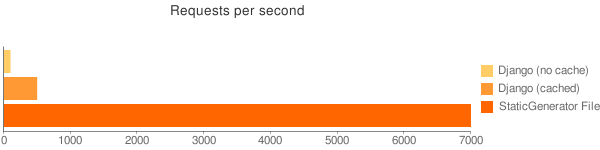

Das RubyFrontier-Buch\\Statische Seiten mit allem Komfort
Table of Contents
- 1 Übersicht und Installation
- 2 Webseiten bauen mit RubyFrontier
- 2.1 Eine erste Website mit RubyFrontier
- 2.2 Exkurs: RubyFrontier und MAMP
- 2.3 Exkurs: RubyFrontier und die Dropbox
- 2.4 Eine Bildergalerie mit RubyFrontier
- 2.5 Exkurs: RubyFrontier und Amazons S3
- 2.6 RubyFrontier als Autorenwerkzeug
- 2.7 Markdown und kramdown
- 2.8 Eigene Templates in RubyFrontier nutzen
- 2.9 Exkurs: (X)HTML5
- 2.10 Eine Wiki-ähnliche Website als Werkzeug für Wissenssammlungen
- 2.11 Exkurs: RubyFrontier und GitHub
- 2.11.1 Schritt 1: Einen SSH-Key generieren
- 2.11.2 Schritt 2: Eine Github-Account einrichten
- 2.11.3 Schritt 3: Git installieren
- 2.11.4 Schritt 4: Git konfigurieren
- 2.11.5 Schritt 5: Ein Repositorium auf Github einrichten
- 2.11.6 Schritt 6: Ein lokales Repositorium einrichten
- 2.11.7 Schritt 7: Mit GitHub for Mac arbeiten
- 2.12 Zwischenspiel: Eine kleine Galerie, die wachsen kann
- 2.13 World Markdown: Ein kleines Notizheft
- 2.14 Querverweise und Linkverwaltung
- 3 Technische Dokumentation
1 Übersicht und Installation
1.1 Einleitung
1.1.1 Was ist RubyFrontier?
1.1.1.1 Die Kurzfassung
RubyFrontier ist ein Werkzeug, um statische Webseiten in einem Texteditor unter MacOS X) zu erstellen (zur Zeit wird leider nur der (kommerzielle) Editor TextMate unterstützt). Die Software wurde von Matt Neuburg in der Programmiersprache Ruby geschrieben und kann mit Ruby-Skripten erweitert werden.
1.1.1.2 Die Langfassung (und ein wenig Computer- und Netzgeschichte)
Vor langer, langer Zeit, als es das Internet noch gar nicht wirklich gab, gab es für die Macintosh-Computer eine Software, die Frontier hieß. Sie war — bis zur Version 5.0.1 — frei (im Sinne von Freibier) und so etwas wie eine eierlegende Wollmilchsau. Sie konnte andere Apple-Programme steuern (lange bevor es AppleScript gab), sie konnte Daten in einer integrierten Objekt-Datenbank (Look ma, no SQL) speichern, sie war ein Outliner und ab der Version 5 auch ein Webserver auf dem Desktop. Vor allem aber besaß sie seit der Version 4.2.3 ein sogenanntes Website Framework, mit dem man für die damaligen Verhältnisse einfach und effektiv statische Webseiten herausschrieben konnte. Und sie besaß eine integrierte Skriptsprache, UserTalk, mit der man das System an seine Bedürfnisse anpassen und experimentieren konnte. Frontier war 1988 von Dave Winer, einem Weblog-Pionier entwickelt worden und wurde von seiner Firma UserLand vertrieben, die Versionen größer 5.0.1 waren kommerziell und mußten bezahlt werden.
Frontier-Desktop
Winer hatte und hat bis heute immer großartige Ideen, leider haperte es häufig an der Ausführung. So ignoriert er bis heute — obwohl er ein Großneffe Arno Schmidts ist —, daß es auch andere Sprachen als Englisch gibt und diese womöglich einer besonderen Beachtung wegen ihrer Schriftzeichen (zum Beispiel Umlaute) benötigen. Ich hatte meine ersten Schritte im Web mit Frontier begonnen und auch mein Weblog, der Schockwellenreiter lief in de ersten Jahren mit dem auf Frontier basierenden Content Management System (CMS) Manila auf einem von Winers Servern. Später wechselte ich dann zu dem ebenfalls auf Frontier basierenden Radio UserLand, einem CMS und Weblog-Tool, das als Webserver auf dem Desktop arbeitete und statische Seiten auf den Server meiner Wahl herausrenderte.
Outliner
Frontier und Radio UserLand waren über Jahre so etwas wie mein Uber Tool, ich programmierte fast alle meine Web-Aktivitäten damit, zum Beispiel auch das Virtual Laboratory for Physiology, eine Website zur Erforschung der Medizingeschichte des 19. Jahrhunderts (aber auch hier wechselte ich vor einigen Jahren zu Zope — siehe unten).
Als Frontier dann kommerziell und die Objekt Datenbank (ODB) ob ihrer Größe instabil wurde, wechselte ich zu Zope, einem auf der Programmiersprache Python basierendem CMS, das große Ähnlichkeiten mit Frontier hatte. Doch einige Jahre später — Dave Winer hatte sich aus gesundheitlichen Gründen von UserLand zurückgezogen — wurde Frontier Open Source und ich stieg sofort wieder um und nutzte von 2005 bis 2009 das Static Site Framework um mein Blog zu erstellen. Leider gab es nicht genug Entwickler, um das Open Source Frontier nicht nur am Leben zu erhalten, sondern weiterzuentwickeln und die Fork, die Winer mit seinem OPML Editor (ein nahzu komplettes Frontier) anbot, hatte alles, nur nicht das Static Site Framework (auf meine Veranlassung war es kurzfristig unter den Tools dabei, verschwand dann aber aus mir unbekannten Gründen wieder aus dem Angebot).
Aber zuerst einmal war ich begeistert und schrieb auch ein Tutorial über Frontiers Static Site Framework, das ich für diese Einführung in RubyFrontier überarbeitet habe.
So läuft mein Blog seitdem mit WordPress, ich bin aber nicht wirklich glücklich darüber und denke immer wieder mal nach, ob ich nicht wieder ein statisches Blog schreibe — evtl. tatsächlich mit RubyFrontier. (Eigentlich habe ich schon alles dafür konzipiert, nur es muß etliches programmiert werden — speziell das Herausschreiben des RSS-Feeds — und ich bin bisher einfach noch nicht dazu gekommen. Aber wenn dieses Buch fertig geschrieben ist, habe ich vielleicht wieder ein wenig mehr Zeit.)
Wie dem auch sei, Winers Version von Frontier, der OPML Editor, lebt und wird auch weiterentwickelt. Aber ihm fehlt einiges, speziell die Möglichkeit, statische Seiten herauszuschreiben. Und in diese Bresche sprang Matt Neuburg, einst ebenfalls ein großer Frontier-Fan, der auch ein Buch darüber veröffentlicht hatte (das über Jahre so etwas wie meine Bibel war), mit RubyFrontier.
1.1.2 Warum RubyFrontier?
1.1.2.1 Warum überhaupt statische Seiten?

Statische Seiten sind schnell
Statische Seiten sind unheimlich schnell. Obiger Vergleich zeigt, daß statische Seiten bis zu 14 mal schneller als (selbst gecachte) dynamisch erzeugte Seiten vom Browser geladen werden.
Statische Seiten sind sicher: Es gibt für Angreifer keine Möglichkeit, mit irgendwelchen Skripten ihren Webauftritt zu manipulieren. Denn in der Regel liegen die Quellen auf Ihrem Desktop. Und da muß ein Angreifer erst einmal herankommen. Okay, wenn Sie Ihren Laptop mit all Ihren Quellen im Zug liegen lassen — wie es angeblich einigen britischen Geheimdienstlern passiert sein soll —, dann haben auch Sie mit Zitronen gehandelt, aber unter normalen Umständen sind Sie der einzige, der die Integrität Ihrer Quellen beschädigen kann. Das natürlich eine vernünftige Backup-Strategie die Sicherheit fördert, muß ich Ihnen sicher nicht erst erzählen, oder?
Statische Seiten gehören Ihnen: Wenn Sie RubyFrontier (aber auch andere Template Toolkits wie das schon erwähnte Perl Template Toolkit oder Ninja2) nutzen, rendert die Software die Seiten auf Ihrem Rechner heraus. Und auch die Quelltexte liegen auf Ihrem Rechner. Falls also irgendein Provider beschließt, Sie zu zensieren oder auch aus finanziellen Gründen den Laden schließen zu wollen, suchen Sie sich einfach einen anderen und laden die Seiten da wieder hoch.
Natürlich funktioniert ein Framework wie RubyFrontier zur Erstellung statischer Seiten nicht wie ein Webserver auf dem Desktop. Dabei hat diese Idee durchaus Charme und es gibt einige Anwendungen, die die Nützlichkeit dieses Konzeptes zeigen, zum Beispiel die Mathematik-Software Sage. Ich habe sie auch nicht völlig aus den Augen verloren, setze da aber weniger auf den OPML Editor (obwohl auch das durchaus Charme hätte), sondern auf den einfach zu installierenden in Python geschriebenen Webserver web2py. Vermutlich wird eine Einführung in dieses Framewokr mein nächstes Buchprojekt.
1.1.2.2 RubyFrontier
Es gibt viele Tools, um statische Seiten zu erzeugen. Die meisten sind Template Engines, die sowohl statische Seiten erzeugen, aber auch im Hintergrund für ein dynamisches Web Framework agieren können. Mein Favorit war lange Zeit das in der Skriptsprache Perl geschriebene Perl Template Toolkit, aber auch andere wie Jekyll (Ruby) oder Ninja2 (Python) hatten meine Sympathie. Bis mir dann auffiel, daß alle diese Werkzeuge einen »Profi«-Ansatz hatten, das heißt, daß es keinen einfachen Einstieg für Menschen gab, die nicht unbedingt auf ein abgeschlossenes Informatik-Studium zurückblicken konnten. Und das, obwohl fast alle das Gegenteil behaupteten. RubyFrontier wiederum ist nach Einschätzung seines Schöpfers zwar ein Werkzeug für Programmierer, doch wie ich Ihnen in den nächsten Abschnitten zeigen werde, ist der Einstieg auch für Nicht-Programmierer doch recht einfach.
Ein wenig skripten muß man zwar auch hier und wenn man Ruby gut beherrscht, kann man sich nahezu alle Wünsche, die man an eine Template-Engine hat, mit RubyFrontier erfüllen. Aber der Einstieg ist — dank der hervorragenden Integration in TextMate — einfach und leicht nachvollziehbar.
1.1.2.3 RubyFrontiers Grenzen
RubyFrontier ist sehr schnell — bedeutend schneller als es Frontier je war —, aber es gibt Situationen, bei denen der Einsatz nicht mehr sinnvoll ist. Falls Sie zum Beispiel zehntausende von Katalog-Seiten herausschreiben müssen, dann sollten Sie auf andere Werkzeuge zurückgreifen. Der Glossary-Mechanismus von RubyFrontier ist sinnvoll und erleichtert Ihnen die Arbeit ungemein, aber er kostet auch Zeit, und zwar viel Zeit. Und bei zehntausenden von Einträgen kann das Herausschreiben der HTML-Seiten auch schon mal einen Tag und eine Nacht oder noch länger dauern. Glauben Sie mir, ich habe es mit einem Katalog des Nachlasses eines vor etwa 100 Jahren gestorbenen Wissenschaftlers probiert (circa 80.000 HTML-Seiten) und mir dann entnervt ein kleines, schmutziges Skript in Python geschrieben. Das konnte zwar nur die Webseiten des Katalogs mit den dazugehörigen Scans rausschreiben und sonst gar nichts, war aber dafür nach wenigen Minuten damit fertig. RubyFrontier benötigte für die gleiche Aufgabe etwa 36 Stunden.
Aber für einen durschnittlichen Web-Auftritt selbst mit ein paar hundert Seiten ist RubyFrontier durchaus das geeignete Werkzeug.
1.1.2.4 Mac only
Bis dato läuft RubyFrontier nur auf Apple-Rechnern unter MacOS X und auch nur mit TextMate. Das ist nicht zwingend, denn Ruby läuft eigentlich auf so ziemlich allem, was die Bezeichnung Betriebssystem verdient (also auch unter Windows und den diversen Linux-/Unix-Derivaten). Gelegentlich hat Matt verlauten lassen, daß er daran denke, diese Abhängigkeiten zu beseitigen, aber es scheint nicht wirklich eine hohe Priorität zu haben. Mein Favorit wäre ja der in Java geschriebene, plattformübergreifende Editor jEdit, für den es ein komfortables Project Viewer-Plugin gibt, mit dem ich alle meine Perl Template Toolkit-Projekte verwalte.
Side Drawer in jEdit
Aber vielleicht setzt sich auch mal jemand anders daran und baut RubyFrontier plattformübergreifend aus. RubyFrontier ist schließlich Open Source und steht unter der äußerst liberalen MIT-Lizenz. Und es sind ganze elf Befehle, die anzupassen und mit dem Text-Editor zu verheiraten sind. Dem Absatz dieses Buches würde es jedenfalls bestimmt nicht schaden, wenn RubyFrontier auch unter Windows und Linux laufen würde.
1.1.2.5 Kein Outliner
Einer der großen Stärken von Frontier war (und ist es beim OPML Editor noch heute), daß es mit Outlines, also strukturierten, eingerückten und ausklappbaren Texten umgehen und diese auch skripten konnte. Mein Weblogzum Beispiel war so organisiert, daß in der ersten Ebene die Überschriften eines Beitrags standen und in der zweiten Ebene und darunter der eigentliche Text. Und der Outline-Renderer (ein UserTalk-Skript) nutzte diese Struktur um dann nicht nur das eigentliche Weblog herauszuschreiben, sondern auch um den RSS-Feed zu produzieren.
Matt Neuburg hat zwar die wichtigsten Outline-Kommandos aus Frontier nach RubyFrontier portiert, aber TextMate ist nun mal kein Outliner. Wer Outlines benötigt, muß diese mit einem externen Programm im OPML-Format erzeugen (dazu böte sich unter anderem natürlich Dave Winers OPML Editor als Open Source-Programm an, aber auch das kommerzielle OmniOutliner ab ca. 40 US-$ kann OPML-Dateien herausschreiben).
Markdown in RubyFrontier
Aber es gibt auch eine interne Alternative: RubyFrontier kann mit der Auszeichnungssprache Markdown und dessen Superset kramdown umgehen, wobei für meinen Geschmack die Unterstützung von kramdown noch etwas gewöhnungsbedürftig ist. Außerdem ist Markdown so etwas wie ein plattformübergreifender Standard und wird von TextMate hervorragend unterstützt. Daher benutze ich bei fast allen meinen Seiten nun Markdown statt eines Outlines und habe so ein leicht lesbares Quellformat, das nicht nur von RubyFrontier in valides (X)HTML gewandelt wird, sondern das ich gegebenenfalls auch leicht in andere Formate (zum Beispiel nach LaTeX) umwandeln kann (das erzeugte LaTeX-File bedarf zwar noch einer gründlichen Nachbehandlung, aber ein Anfang ist damit gemacht). So kommt es, daß ich den Outliner nicht mehr wirklich vermisse.
1.1.2.6 Für Autoren
Dave Winer hatte einmal geschrieben: »The web is an writing environment.« — »Das Netz ist eine Umgebung für Autoren.« Und genau das ist auch RubyFrontier: Eine Arbeitsumgebung für Autoren. Und zwar für unabhängige Autoren, die bis zur endgültigen Publikation die volle Kontrolle über ihre Veröffentlichungen behalten wollen.
1.2 Installation und erste Schritte
1.2.1 RubyFrontier installieren
1.2.1.1 Voraussetzung
Um RubyFrontier auf Ihrem Mac installieren zu können, müssen Sie vorher schon TextMate installiert haben. Der Editor ist kommerziell und kostet als Einzelplatzlizenz 44,85 Euro. Falls Sie mit diesem Tutorial nur einmal ausprobieren wollen, ob RubyFrontier überhaupt das richtige Werkzeug für Sie ist, können Sie sich auf der Seite des Herstellers eine 30 Tage gültige, voll funktionsfähige Probeversion herunterladen und damit erst einmal experimentieren.
RubyFrontier nutzt momentan Ruby 1.8.7 (das ist die mit dem Schneeleoparden (MacOS X 10.6) und dem Löwen (MacOS X 10.7) mitgelieferte und installierte Ruby-Version). Matt Neuburg erwartet nicht, daß die derzeit aktuelle RubyFrontier-Version unter Ruby 1.9 läuft, aber eine Ruby 1.9 kompatible Version ist für die Zukunft geplant und sollte spätestens dann vorhanden sein, wenn Apple Ruby 1.9 per Default mit seinen Rechnern ausliefert.
1.2.1.2 Installation
Um dann RubyFrontier auf Ihrem Mac zu installieren, müssen Sie sich erst einmal das TextMate-Bundle als Zip-Datei von GitHub holen.
RubyFrontier auf GitHub
Mit einem einfachen Doppelklick kann die Datei auf dem Rechner entpackt werden. Man erhält dann ein ReadMe als Markdown-Datei (was Markdown ist, erfahren Sie später) und dann das eigentliche RubyFrontier-Paket als ein TextMate-Bundle (mit der Endung .tmbundle).
Die ausgepackte Installation
Ein Doppelklick auf das TextMate-Bundle installiert es. Wenn alles gut gegangen ist, öffnet sich TextMate mit dem Bundle-Editor und zeigt Ihnen was alles installiert wurde.
RubyFrontier im Bundle-Editor
Was zu tun ist, wenn die Installation danebengeht, kann ich Ihnen leider nicht sagen. Ich habe RubyFrontier schon dutzendfach auf diversen Rechnern installiert und bisher ist alles glattgegangen. Hoffen wir also einfach, daß es bei Ihnen genau so ist.
RubyFrontier ist nun fertig installiert. Doch bevor Sie zum ersten Mal loslegen, zügeln Sie Ihre Neugier und beenden TextMate erst einmal wieder und öffnen es dann neu.
1.2.2 Die erste Website
Denn bevor Sie wirklich eine neue Website mit RubyFrontier anlegen können, müssen noch einige Vorarbeiten erledigt werden. Erstellen Sie zuerst einen Ordner, der alle ihre RubyFrontier-Projekte enthalten soll und nennen Sie ihn irgendwie, zum Beispiel myRubyFrontierSites.
Tip: Wenn Sie über einen Dropbox-Account verfügen, können Sie diesen Ordner auch in ihrer Dropbox anlegen. Sie können dann mit ihren Dateien auf allen Rechnern arbeiten, die mit Ihrer Dropbox verbunden sind (vorausgesetzt, auf ihnen ist ebenfalls TextMate und RubyFrontier installiert).
Jetzt öffnen Sie TextMate wieder. Falls Sie Ihre Version so konfiguriert haben, daß der Editor beim Öffnen kein Textfenster (weder ein leeres noch das zuletzt benutzte) öffnen soll, öffnen Sie eines, weil sonst die RubyFrontier-Befehle nicht aufgerufen werden können.
Nun gehen sie in das Menü Bundles und wählen RubyFrontier > New Site aus. Eventuell besteht TextMate darauf, daß Sie vorher Ihr leeres Textfenster sichern müssen. Tun Sie der Software diesen gefallen und sichern Sie es irgendwo ab, wo Sie es leicht wiederfinden und wegwerfen können (das dürfte bei den meisten von Ihnen der Schreibtisch sein). Den folgenden Dialog navigieren Sie in den soeben angelegten Ordner myRubyFrontierSite (oder wie immer Sie ihn genannt haben) und legen dort einen neuen Ordner an. Ich habe ihn aus naheliegenden Gründen tutorial genannt.
Dialog um eine neue Webseite anzulegen
Und voilà, schon öffnet sich ein Projekt-Fenster, das Ihnen einen frisch generierten Ordner mit vielen Dateien, also Ihr neues Projekt, zeigt:
Frisch angelegtes RubyFrontier-Projekt
Bevor Sie weitermachen, sollten Sie noch etwas erledigen, was sonst im Eifer des Gefechts leicht untergeht: Sichern Sie Ihr frisch angelegtes Projekt. Dazu gehen Sie in TextMate in das Menü File und dann zu Save Project. Legen Sie die Projektdatei oberhalb Ihres frisch angelegten Tutorial-Ordners, aber im Ordner myRubyFrontierSites ab.
Das Projekt sichern
Nennen Sie es wie Ihr Projekt, also tutorial. Das ist nicht zwingend vorgeschrieben, aber es erleichtert bei vielen Projekten die Übersicht ungemein. Ihr frisch angelegter Projektordner sollte also so aussehen:

RubyFrontier-Projektstruktur
Als Letztes ist eines noch zu erledigen: Öffnen Sie die Datei #ftpSite.yaml und ändern Sie sie wie folgt:
:folder: ~/Desktop/tutorial :method: file :isLocal: true
Unter :folder: wählen Sie einfach den Ordner aus, in dem Sie Ihre fertigen Webseiten ablegen möchten. Für’s erste reicht der Schreibtisch, später werde ich Ihnen andere Alternativen vorschlagen und Ihnen auch erklären, was der merkwürdige Lattenzaun (#, auch Doppelkreuz genannt) bedeutet, der dieser und anderen Dateien und Ordner vorsteht, bedeutet.
Gratuliere! Sie haben Ihr erstes RubyFrontier-Projekt erfolgreich angelegt. Ab jetzt können Sie Ihr Projekt einfach öffnen, in dem Sie auf die Projektdatei klicken.
1.2.2.1 Jetzt aber …
Nun da Sie die Vorarbeiten erledigt haben, sind Sie endlich in der Lage, Ihre erste Website mit RubyFrontier zu erstellen. Daher öffnen Sie mit einem Doppelklick auf die Projektdatei tutorial TextMate erneut und löschen erst einmal die Dateien firstpage.txt, secondpage.txt und thirdpage.txt. Dies sind englischsprachige Beispieldateien, die Sie nicht mehr benötigen. Dafür legen wir eine Datei index.txt auf der obersten Ebene im tutorial-Ordner an, in die Sie Folgendes hineinschreiben:
#title "Startseite" <h1>Meine erste Website: <%= title %></h1> <p> Hallo Welt! Grüße von RubyFrontier.</p>
Jetzt achten Sie darauf, daß diese Datei im Hauptfenster zu sehen ist (den Fokus besitzt) und wählen im Menü Bundle den Punkt RubyFrontier > Publish Page aus. Wenn Sie sich nicht irgendwo vertippt haben, sollte — nachdem TextMate eine Zeitlang gearbeitet hat — Ihr Standard-Browser aufgehen und ihnen folgende Seite zeigen:
Ihre erste, mit RubyFrontier erstellte Seite
Wenn Sie mit Bildern arbeiten, benötigen Sie die Ruby-Bibliothek dimensions, die Sie auf Ihrem Mac ganz einfach mit nachladen können. Dazu öffnen Sie ein Terminalfenster und tippen dort
sudo gem install dimensions
ein. Sie werden nach Ihrem Passwort gefragt und kurz danach ist die Bibliothek installert.
Je nach Umfang Ihrer Ruby-Installation könnten jedoch noch andere Ruby-Bibliotheken angemeckert werden, z.B. kramdown, SASS, LESS, HAML und lib/xml. Obwohl Sie für die Arbeit in diesem Buch eigentlich nur noch kramdown wirklich benötigen, schadet es nicht, die anderen fehlenden auch zu installieren. Denn LESS resp. SASS und auch die lib/xml könnten für spätere Aufgaben durchaus nützlich sein. Dazu öffnen Sie das Terminalfenster und tippen zum Beispiel ein:
sudo gem install kramdown
Sie werden aufgefrodert, Ihr Admin-Passwort einzugeben (das ist das, das Sie bei vielen anderen Programm-Installationen und Betriebssystem-Updates ebenfalls eingeben müssen) und dann läuft die Installation automatisch ab.
Genau so verfahren Sie mit LESS, SASS oder HAML:
sudo gem install less sudo gem install sass sudo gem install haml
lib/xml ist eine Besonderheit, da der Name der Bibliothek hier anders eingegeben werden muß:
sudo gem install libxml-ruby
Außerdem wird Ihnen RubyFrontier im Meldungsfenster noch empört mitteilen, daß die Datei user.rb nicht gefunden würde. Auch diese Datei wird nicht unbedingt benötigt (hier können Sie z.B. Makros ablegen, die für mehrere RubyFrontier-Projkete Verwendung finden sollen), aber falls Sie die Meldung stört, legen Sie einfach eine Datei user.rb an und teilen Sie RubyFrontier über das Menü Bundels -> RubyFrontier -> Locate User.rb File mit, wo Sie diese angelegt haben. Theoretisch kann das überall auf Ihrer Festplatte sein und Sie können das auch jederzeit ändern, ich empfehle Ihnen, die Datei im Ordner myRubyFrontierSites auf oberster Ebene abzulegen, also dort, wo auch schon Ihre TextMate-Projektdatei liegt.
Doch jetzt wieder die Frage: Was ist eigentlich passiert? Die erste Zeile mit der merkwürdigen Bezeichnung
#title "Startseite"
ist eine Direktive. Sie weist RubyFrontier an, daß unter dem Namen title der Wert Startseite abzuspeichern ist. Jede neue Seite muß die Direktive title enthalten und diese sollte aus Gründen, die ich Ihnen weiter unten erläutere, eindeutig sein, d.h. keine Seite darf den gleichen Titel wie eine andere besitzen.
Bevor RubyFrontier mit dem Prozeß des Herausschreibens beginnt, sammelt es diese und andere Direktiven im Hauptspeicher und kann dann darauf zugreifen. Genau das haben Sie mit der Zeichenfolge
<h1>Meine erste Website: <%= title %></h1>
getan. An dieser Stelle wird der Inhalt der title-Direktive, in diesem Falle also »Startseite«, eingesetzt. Auch wenn Direktiven weit mächtiger sind, können sich Programmierer diese erst einmal als eine Art Variable vorstellen.
Der Rest ist simples HTML. RubyFrontier kann auch mit anderen Markup-Sprachen (z.B. Markdown) umgehen, wie ich Ihnen in einem späteren Abschnitt zeigen werde.
Der Befehl »Publish Page« hat RunyFrontier angewiesen, den Text als HTML-Datei herauszuschreiben, zu »rendern«, das heißt aus diesem Text eine HTML-Seite für das Web zu erstellen. Die Seite liegt, wenn Sie meinen Empfehlungen gefolgt sind, auf Ihrem Schreibtisch im Ordner tutorial und heißt index.html. Es ist eine stinknormale HTML-Seite. Sie können Sie mit jedem beliebigen Texteditor öffnen und sich anschauen, Sie könnten sie aber auch mit einem (S)FTP-Client Ihrer Wahl auf einem Server ablegen.
1.2.2.2 Templates
Doch wo kommt eigentlich der Rest des HTML her, das RubyFrontier um Ihre Websiete herum gebastelt hat? Um das herauszubekommen, öffnen Sie doch einfach in TextMate die Datei #template.txt und Sie werden dieses sehen:
<%= pageheader() %> <p id="bodytext"></p> <hr /> <%= nextprevlinks() %> <%= pagefooter() %>
Die erste Zeile sorgt dafür, daß das HTML vor Ihrem Text erzeugt wird, die letzte Zeile bringt das HTML nach Ihrem Text. Und der Eintrag
<p id="bodytext"></p>
sorgt dafür, daß an dieser Stelle Ihr Text erscheint. Danach wird noch eine horizontale Linie erzeugt und ein Makro aufgerufen, das Links zu den vorherigen und nachfolgenden Seiten erzeugt, falls Sie das wünschen. Momentan benötigen Sie diese Zeile noch nicht, daher können Sie sie gefahrlos löschen (es stört aber auch nicht wirklich, wenn Sie sie stehen lassen.
Das heißt also: Jedesmal, wenn Sie eine Seite herausrendern, sucht sich RubyFrontier das »zuständige« Template und bringt dieses mit Ihrem zu rendernden Text zusammen.
Natürlich können Sie auch Templates ändern. Vermerken Sie doch einfach einmal stolz in ihrem Template, womit Sie die Seite herausgeschrieben haben
<%= pageheader() %> <p id="bodytext"></p> <hr /> <p style="font-size:small;"> Diese Seite wurde mit RubyFrontier erstellt.</p> <%= pagefooter() %>
und rendern dann Ihre Datei index.txt erneut heraus. Sie sollte jetzt so aussehen:
Änderung am Template
Die Zeilen
<%= pageheader() %> <%= pagefooter() %>
sind, wie schon erwähnt, Makroaufrufe. Makroaufrufe stehen immer in spitzen Klammern und Prozentzeichen. Und das Gleichheitszeichen bedeutet, daß das Makro einen Wert (in der Regel einen String, also Text) zurückliefert. Makros ohne das Gleichheitszeichen berechnen zwar auch irgendetwas, haben aber nur indirekt Einfluß auf die herausgeschriebenen Seiten.
1.2.2.3 Ein erstes Makro
Das ist zwar schon etwas, aber eigentlich noch langweilig. Häufig steht im Footer einer Seite, wann das letzte Update passiert ist. Dafür schreiben wir uns ein Makro. Makros sind kleine Ruby-Programme, die irgendetwas zurückliefern, was Sie in Ihre Webseite einbauen wollen. Üblicherweise werden Makros im #tools-Ordner abgelegt und haben die Dateiendung .rb. Also öffnen Sie den Tools-Ordner und legen darin eine Datei mit dem Namen clocknow.rb an. Und in diese Datei schreiben Sie folgendes kleine Ruby-Skript:
def clocknow()
t = Time.new
t.strftime("%d.%m.%Y, %H:%M Uhr")
end
Makro-Dateien haben üblicherweise den gleichen Namen wie die Funktion, die daraus aufgerufen werden soll — obwohl das nicht zwingend ist. Aber es erleichtert die Übersicht. Den Namen clocknow habe ich als Reminiszens an eine gleichnamige Frontier-Funktion gewählt. Ruby-Funktionen liefern im Default-Fall den Wert der letzten Programmzeile (vor dem end) zurück, ein explizites return ist nicht erforderlich. Die Funktion ist recht einfach: Erst weisen Sie der Variablen t die aktuelle Zeit zu und dann formatieren Sie diese, so daß sie den deutschen Gepflogenheiten, also dd.mm.YYYY, HH:MM entspricht. Die vorletzte Zeile in Ihrem Template ändern Sie auch noch (der Zeilenumbruch dient nur der besseren Lesbarkeit):
<p style="font-size:small;">Diese Seite wurde mit RubyFrontier erstellt. Letzte Änderung: <%= clocknow() %></p>
Und schon steht nach jedem Herausschreiben die aktuelle Uhrzeit auf Ihrer Seite.
Seite mit aktueller Uhrzeit
Dieses Makro wäre zum Beispiel auch ein Kandidat für ein Makro, das Sie in der oben angelegten Datei user.rb ablegen könnten, da Sie die Uhrzeit sicher auch in anderen Projekten benötigen. Für die weitere Arbeit an diesem Tutorial lassen Sie sie jedoch bitte erst einmal im #tools-Ordner.
1.3 Die Benutzeroberfläche von RubyFrontier
RubyFrontier ist ja bekanntlich ein TextMate Bundle und so sind die RubyFrontier Befehle natürlich über das Menü Bundle zu erreichen. Fahren Sie mit der Maus in diesem Menü über den Eintrag RubyFrontier, so öffnet sich ein Untermenü mit etwas mehr als zwei Handvoll (genauer: elf) Befehlen. Es sind dies:
- New Site
- Preflight Site
- Publish Page
- Publish Folder
- Publish Folder (No Preflight)
- Publish Site
- Publish Site (No Preflight)
- Traverse Selected Link
- Locate User.rb File
- Build RubyFrontier Docs
- Show RubyFrontier Docs Source
Das gleiche Menü (nur in kleinerer Schriftgröße) erhalten Sie auch, wenn Sie auf das kleine Zahnrädchen in der Fußzeile des Fensters klicken (es ist die dritte Spalte von links):
RubyFrontier in der Fußzeile des Textfensters
Welche von beiden Möglichkeiten Sie bevorzugen, ist Geschmackssache. Bei mir ist die Fußzeile der kürzere Mausweg und daher benutze ich fast immer diese. Aber da es für die wichtigsten Menüs immer auch Tastaturkürzel gibt, benutze ich die Menüs so gut wie gar nicht, sondern rufe RubyFrontier immer über die Tastatur auf.
Die Menüpunkte bedeuten im Einzelnen (auf die Preflight-Menüs komme ich später im Zusammenhang mit dem Glossary-Mechanismus von RubyFrontier zu sprechen):
- New Site: Diesen Befehl haben Sie schon am Anfang kennengelernt, damit legen Sie ein komplett neues RubyFrontier-Projekt mit all seinen Dateien und Ordnern an.
- Publish Page schreibt eine einzelne Seite heraus.
- Publish Folder schreibt alle Seiten eines Unterordners und der Ordner darunter heraus. Diesen Punkt hat Matt Neuburg auf meine Anregung in RubyFrontier eingebaut. Denn wie ich weiter oben schon einmal schrieb, hatte ich versucht, eine große Sammlung mithilfe von RubyFrontier zu publizieren. Und es kann die zum Rendern notwendige Zeit doch erheblich verkürzen, wenn man nur Teilbäume herausschreiben muß.
- Publish Site ist der Befehl, um alle Dateien eines Projektes herauszuschreiben.
- Traverse Selected Link versucht, einen selektierten (internen) Link zu interpretieren und die entsprechende Seite in TextMate zu öffnen. Dieser Befehl kann bei einem großen Projekt sehr hilfreich sein, wenn Sie zum Beispiel herausfinden wollen, was eigentlich noch mal auf der Seite stand, die sich hinter diesem Link verbirgt.
- Locate User.rb File: User.rb ist die Datei, in der Sie projektübergreifend Ruby-Makros für ihre Webseiten unterbringen. Im Regelfalle nutzen Sie sie nicht, wenn Sie mit RubyFrontier beginnen, aber irgendwann kommt der Punkt, wo Sie über eine Sammlung nützlicher Skripte verfügen, die Sie für alle Ihre Sites parat haben wollen.
- Build RubyFrontier Docs rendert Matt Neuburgs RubyFrontier-Dokumentation auf Ihrem Schreibtisch heraus und öffnet sie anschließend im Browser. Sollten Sie mindestens einmal aufrufen, damit Sie sie zur Verfügung haben, auch wenn Sie offline arbeiten.
- Show RubyFrontier Docs Source öffnet die RubyFrontier-Dokumentation als RubyFrontier-Projekt in TextMate. Das ist — wenn Sie mit RubyFrontier ein wenig fortgeschritten sind — eines der nützlichsten Hilfen überhaupt. Denn hier können Sie nachschauen, wie der Meister seine Probleme gelöst hat.
Ja, und das letzte »GUI«-Element von RubyFrontier ist das Meldungsfenster von TextMate:
RubyFrontier-Meldungsfenster
Hier stehen — wenn etwas schiefläuft — auch die mehr oder weniger aussagekräftigen Informationen über den gefundenen Fehler. Es ist ein oft sehr hilfreiches, aber schnittstellentechnisch etwas benutzerunfreundlich gelöstes Feature. Denn man muß nach jedem Durchlauf dieses Fenster erst einmal wegklicken (oder sonstwie dafür sorgen, daß das eigentlich Textfenster, mit dem man arbeitet, den Fokus bekommt), bevor man weiterarbeiten kann. Aber das ist ein Feature von TextMate und kann nicht dem Programmierer von RubyFrontier angelastet werden.
2 Webseiten bauen mit RubyFrontier
2.1 Eine erste Website mit RubyFrontier
2.1.1 Ihr Hundesportverein im Web
Nachdem Sie nun die Grundlagen der Webseiten-Erstellung mit RubyFrontier kennengelernt haben, werden wir nun in medias res gehen und eine erste »echte« Website erstellen. Dazu stellen Sie sich bitte vor, Sie sind Mitglied im Hundesportverein Flughund e.V. und der Vorstand hat Sie beauftragt, eine Homepage für Ihren Verein zu erstellen. Vermutlich war Ihr erster Gedanke dann, ein vollständiges Content Management System (CMS), wie z.B. Drupal, Joomla! oder das sehr populäre WordPress einzusetzen, in dem dann alle Vereinsmitglieder mitschreiben und Inhalte einstellen können. Aber glauben Sie mir: Sie tun es nicht. Ich habe jahrelang die Webseiten (m)eines Hundesportvereins gepflegt. Sie werden Emails mit — im schlimmsten Falle — Word-Dateien bekommen, die eventuell sogar noch liebevoll gestaltet sind und diese sollen Sie dann genau so ins Web stellen.
Und das ist nicht Hundesportverein-typisch. In Ihrem Fußball- oder Eishockeyverein, in Ihrer Bürgerinitiative oder wofür Sie immer eine Website erstellen wollen oder sollen, wird es nicht anders sein.
Ein CMS ist in solchen Fällen nicht nur ein totaler Overkill, sondern bedeutet für Sie auch noch mehr Arbeit: Sie müssen Updates einspielen, die Datenbank pflegen und Sicherheitshinweise beachten. Und daher können Sie — wenn sowieso alles nur über Ihren Rechner läuft — auch genau so gut, wenn nicht besser, RubyFrontier dafür benutzen: Keine Updates, keine Datenbank und keine Sicherheitsprobleme. Und billiger wird es im Regelfalle auch noch, da Sie für statische Seiten die günstigste Hosting-Möglichkeit auswählen können. (Das letzte Argument wird mit Sicherheit den Kassenwart Ihres Vereins überzeugen.)
Sie werden daher jetzt sukzessive die anfangs erstellten Seiten zu einem kleinen Webauftritt aufbauen. Dazu schreiben Sie erst einmal etwas in die Startseite (index.txt) hinein.
#title: "HSV Flughund e.V.: Startseite" <h1>Willkommen auf den Webseiten des Hundesportvereins Flughund e.V.</h1> <p> Der HSV Flughund e.V. ist eine Organisation von Hundesportlern und Hundeliebhabern. Wir betreiben insbesondere die Hundesportarten Agility, Obedience und den Turnierhundesport. Auch die Ausbildung von menschenfreundlichen Familienhunden und verkehrssicheren Begleithunden wird angestrebt. Jede der Gesundheit der Hunde und ihrer Hundeführer dienende Aktivität wird unterstützt. Darüberhinaus leistet der Verein Aufklärungsarbeit in der Öffentlichkeit zur artgerechten Hundehaltung und -erziehung. Der HSV Flughund e.V. setzt sich aktiv für Tierschutz, Umweltschutz und Jugendarbeit ein.</p>
Schlagen Sie mich bitte nicht wegen des Textes. Er ist zum großen Teil der Satzung eines real existierenden Hundesportvereins entnommen. Aber darauf kommt es ja auch nicht an. Rendern Sie den Text heraus und Sie sollten eine Webseite erhalten, die ungefähr so aussieht:
Screenshot 1: HSV Flughund e.V.
Das ist zwar schon etwas, aber noch nicht wirklich weltbewegend. Mich — und vielleicht auch Sie — ie blaßgelbe Farbe des Hintergrunds. Um diese zu ändern, öffnen Sie doch einfach die Datei #prefs.yaml. Dort steht nur folgender Eintrag:
--- :bgcolor: FFFFEE
YAML ist eine vereinfachte Auszeichnungssprache, die sowohl von Ruby leicht zu parsen als auch von Menschen zu lesen ist und daher hat Matt Neuburg sie ausgewählt, um einige Voreinstellungen für Ihre Webseiten ablegen zu können. Ändern Sie also einfach die Hintergrundfarbe bgcolor nach weiß:
--- :bgcolor: ffffff
Die Farbdarstellung ist eine Kodierung der Hexwerte, wie sie in HTML üblich ist. Das dabei normalerweise nötige führende Doppelkreuz kann/muß entfallen, statt #ffffff schreiben Sie also einfach ffffff. (Und wie Sie gesehen haben, bevorzuge ich die Kleinschreibung der Hexwerte, das ist allerdings völlig egal, der Browser interpretiert das schon richtig.)
Wenn Sie jetzt die Startseite erneut herausschreiben lassen, hat sie eine weiße Hintergrundfarbe.
Die prefs.yaml ist der Ort, in dem Sie viele weitere Voreinstellungen ablegen können. Ich werde im Laufe dieser Einführung noch häufiger darauf zurückkommen.
2.1.1.1 Ein neuer Pageheader
Was Sie vermutlich stört, ist das der Titel der Startseite HSV Flughund e.V.: Startseite heißt. Ich habe das so angelegt, weil ich möchte, daß in der Kopfleiste des Browserfenster, in dem immer der komplette Seitentitel steht, auch der Name des Vereins auftaucht. Denn dieser Seitentitel ist für die meisten Suchmaschinen, speziell für Google sehr relevant. Aber es macht die Titelei doch sehr unhandlich. RubyFrontier holt sich den Pageheader irgendwo aus den Tiefen seines Quellcodes, aber es gibt natürlich Möglihckeiten, hier einzugreifen.
Die einfachste Möglichkeit, einen eigenen Pageheader zu bekommen, ist es, eine Datei namens #pageheader.txt im Wurzelverzeichnis anzulegen, also dort, wo zum Beispiel auch die #prefs.yaml oder die #ftpSite.yaml zu finden ist. Sie sollte so aussehen:
<!DOCTYPE html PUBLIC "-//W3C//DTD XHTML 1.0 Transitional//EN"
"http://www.w3.org/TR/xhtml1/DTD/xhtml1-transitional.dtd">
<html xmlns="http://www.w3.org/1999/xhtml" xml:lang="de" lang="de">
<head>
<%= metatags() %>
<%= linkstylesheets() %>
<%= linkjavascripts() %>
<title><%= sitetitle %>: <%= title %></title>
</head>
<%= bodytag() %>
Bis auf zwei Ausnahmen entspricht dieser Pageheader exakt dem Pageheader, der von RubyFrontier per Default herausgeschrieben ist. Die erste Ausnahme steckt in der dritten Zeile, hier habe ich dem HTML-Tag noch mitgeteilt, daß diese Seite in deutscher Sprache geschrieben ist. Dies wird häufig vergessen, ist aber ein wichtiger Anhaltspunkt für Suchmaschinen:
<html xmlns="http://www.w3.org/1999/xhtml" xml:lang="de" lang="de">
Und dann habe ich in den <title>-Tag noch den Aufruf <%= sitetitle %> eingefügt. Das ist eine selbsterstellte Direktive und Sie müssen RubyFrontier nun noch bekanntmachen, daß diese Direktive einen Wert besitzt. Die geeignetste Stelle ist dafür wieder die Datei #prefs.yaml Also fügen Sie dort folgende Zeile ein:
:sitetitle: 'HSV Flughund e.V.'
Nun können Sie den #title in der index.txt auf “Startseite” verkürzen. Wenn Sie nun die Seite wieder herausschreiben, werden Sie feststellen, daß — wie erwartet — der HSV Flughund e.V. dennoch in der Titelleiste des Brwosers erscheint. Und das wird er auch in allen Seiten, die Sie noch erstellen werden.
Spätestens dann, wenn Sie viel mit JavaScript arbeiten, werden Sie froh sein, daß RubyFrontier Ihnen diverse Möglichkeiten bietet, einen eigenen Pageheader zu erzeugen. Ich werde später noch darauf zurückkommen.
Was bedeuten nun die anderen Zeilen im Pageheader? <%= metatags() %> schreibt diese beiden Zeilen heraus:
<meta http-equiv="content-type" content="text/html; charset=utf-8" /> <meta name="generator" content="RubyFrontier" />
Die erste Zeile sollten Sie nur ändern, wenn Sie wirklich wissen, was Sie tun (ihre Seite zum Beispiel komplett auf chinesisch ist). Die zweite Zeile gibt RubyFrontier Kredit. Das ist nicht nur eine Spielerei — vielleicht will Matt Neuburg mal wissen, wieviele Seiten mit seiner Software es im Netz gibt — und sollte daher, wenn es keine Gründe gibt, die dagegen sprechen, auch nicht geändert werden.
Die nächsten beiden Zeilen machen momentan noch gar nichts, da Sie in ihrer Site bisher wegerr etwas mit JavaScript noch mit Cascading Style Sheets (CSS) angestellt haben. Zumindest das letztere wird sich aber gleich ändern.
Der letzte Unbekannte ist noch der <%= bodytag() %>-Aufruf. Er schreibt per Default nur <body> heraus, kann aber noch andere Parameter, wie zum Beispiel die Text- oder die Linkfarbe, übernehmen. Dies ist jedoch veraltet, da man dies heutzutage im Regelfalle mit Stylesheets erledigt und sollte daher nur angewendet werden, wenn es Gründe dafür gibt. Ein Grund wäre zum Beispiel, daß man auf jeden Fall ein bestimmtes Aussehen erreichen will, auch wenn die Stylesheets nicht geladen oder interpretiert werden.
2.1.1.2 Text mit Stil
Wenn Sie den #stylesheets-Ordner öffnen, werden Sie feststellen, daß es dort schon zwei CSS-Dateien gibt (s1.css und s2.css). Sie sind aus didaktischen Gründen dort, Sie benötigen sie aber nicht, daher können Sie sie einfach wegwerfen. Legen Sie stattdessen in diesem Ordner eine Datei namens default.css an (sie könnte auch irgendwie anders heißen, es ist einfach der Name, den ich für die Default-Stylesheet-Datei bevorzuge). Und dort schreiben Sie folgendes hinein:
body {
font-family: Verdana, sans-serif;
font-size: 12px;
}
h1 {
font-size: 18px;
}
.small {
font-size: 10px;
}
Es ist ein minimalistisches Stylesheet, das ich Ihnen hier anbiete. Aber einmal ist dies kein Lehrbuch über CSS und zum anderen will ich Ihnen erst einmal auch nur das Prinzip erläutern. Wenn Sie jetzt die Seite neu herausschreiben, werden Sie feststellen, daß nichts Neues passiert. RubyFrontier weiß nämlich noch nicht, welches Stylesheet es nutzen soll, dies müssen Sie der Software erst noch mitteilen. Und die naheliegendste Stelle, wo dies geschehen kann, ist, was Sie sicher schon geahnt haben, wieder die Datei #prefs.yaml. Fügen Sie ihr einfach noch eine weitere Zeile hinzu:
:linkstylesheets: [default]
Außerdem sollten Sie im Template noch etwas ändern. Der Tag
<p style="font-size:small;">
sollte in
<p class="small">
umgewandelt werden, da Sie den Stil dafür ja nun auch in ihrem Stylesheet festgelegt haben.
Screenshot 2: HSV Flughund e.V. mit Stil
Okay, die Schrift ist vielleicht ein wenig arg klein geraten, aber ich wollte ja auch, daß Sie einen Unterschied zur Seite ohne Stylesheet sehen. Sie sind ausdrücklich eingeladen, ein wenig mit den Parametern zu spielen, damit Sie ein Gefühl dafür bekommen, wie sich diese auf das Aussehen der Seite auswirken.
Stylesheets können ja bekanntlich auf zweierlei Arten eingebunden werden: Einmal kann man ein Stylesheet direkt in den <head> einer HTML-Seite schreiben und einmal kann man es mit Link auf eine externe CSS-Datei dazulinken. Beide Methoden haben ihre Vor- und Nachteile: Seiten mit eingebundenen Stylesheets laden in der Regel schneller, da sie keine weitere Datei nachladen müssen. Dies ist bei der heutigen Geschwindigkeit des Internets jedoch nur noch bei sehr stark frequentierten Seiten ein Problem, sicher jedoch nicht bei der Seite Ihres Hundesportvereins.
Bei Seiten mit Links auf externe Stylesheets braucht man dafür auch nur an dieser einen Stelle etwas ändern, wenn es etwas zu ändern gibt. Da das Stylesheet bei jedem Aufruf einer Seite nachgeladen wird, sind die Änderungen — von irgendwelchem Cache-Verhalten des Browsers mal abgesehen — sofort sichtbar.
Zwar müssen Sie bei RubyFrontier auch nur an einer Stelle ein engebettetes Stylesheet ändern, damit die Änderungen aber wirksam werden, müssen Sie alle Seiten neu herausschreiben. Und das kann bei einem größeren Webauftritt schon etwas dauern. Daher empfehle ich, nach Möglichkeit auf das Einbetten von Stylesheets zu verzichten. Aber — wie ich später noch zeigen werde — es kann durchaus Situationen geben, wo das Einbetten eines Stylesheets die sinnvollere Lösung ist.
2.1.1.3 Wir wollen Bilder!
Sheltie
Eine Website ohne Bilder ist wie ein … Fisch ohne Fahrrad. Mindestens! Und natürlich bietet auch RubyFrontier die Möglichkeit, Bilder komfortabel einzubinden. Laden Sie sich dazu erst einmal das nebenstehende Bild eines kleinen Sheltie herunter. Es heißt hund02.jpeg und der natürliche Ort, in dem RubyFrontier Bilder abspeichert, ist der #images-Ordner. Dort sollte bisher nur die Datei RubyFrontierLogo.png liegen und dort legen Sie nun auch das Hundebildchen hinein.
Dann geben Sie in der Startseite unter dem ersten Paragraph-Tag (<p>) folgendes Makro ein:
<%= imageref("hund02", {:border => "0", :width => "64", :height => "64",
:alt => "Sheltie", :align => "left", :hspace => "8", :vspace => "4"})
%>
Das Makro verlang als erstes den Namen der Datei ohne Endung, unterstützt werden JPEG-, GIF- und PNG-Bilder, alle anderen Formate führen zu Fehlermeldungen. Danach folgt eine Liste der Attribute, auf die Angabe von Höhe und Weite können Sie verzichten, wenn das Bild — wie hier — in der Originalgröße abgebildet werden soll, RubyFrontier rechnet diese für Sie aus. Ich habe Sie hier nur beispielhaft aufgenommen, damit Sie wissen, wie Sie ein Bild verkleinern oder vergrößern können.
Alle Parameter außer dem Dateinamen sind übrigens optional, aber manchmal, wie im Falle der Linksbündigkeit, auch notwendig. Wenn der alt-Parameter fehlt, bastelt sich RubyFrontier einen aus dem Dateinamen zusammen, da er der einzige Parameter ist, der bei HTML vorgeschrieben ist. Und RubyFrontier gibt sich große Mühe, valides XHTML zu erzeugen. Die Reihenfolge der Parameter ist übrigens beliebig, sie besteht aus einer kommagetrennten Liste mit den einzelnen Listenpaaren:
:attribut => "Attributwert"
Menschen wie ich, die Ruby nicht mit der Muttermilch eingesogen haben, vergessen übrigens häufig den Doppelpunkt vor dem :attribut. Das führt zu häßlichen Fehlermeldungen, die man als Anfänger nicht immer richtig interpretiert. Daher achten Sie bitte darauf, diese (und auch die Kommata) nicht zu vergessen.
2.1.1.4 Ein Wort noch zu den (internen) URLs
Eine von RubyFrontiers Zielen ist es, eine Website so portabel wie möglich zu halten. Daher sind alle internen URLs — auch die zu den Bildern —, die von RubyFrontier generiert werden, relative URLs. Dies sollte uns jedoch nicht weiter beunruhigen, denn RubyFrontier erledigt dies gut. Wichtigstes Hilfsmittel dazu ist die Datei #autoglossary.yaml, die von RubyFrontier automatisch erzeugt wird. Diese Datei sollten Sie daher nach Möglichkeit nicht anfassen. Sie gehört RubyFrontier und nur RubyFrontier.
Sie helfen RubyFrontier auch, wenn Sie alle Dateinamen eindeutig halten. RubyFrontier kommt zwar auch mit einer zweiten index.txt in einem Unterordner zurecht, gibt aber eine Warnung aus, die den Prozeß des Herausschreibens bei großen Sites mit vielen Unterordnern und vielen index.txt-Dateien durchaus signifikant verlangsamen kann. Also vermeiden Sie dieses nach Möglichkeit.
2.1.1.5 Und jetzt noch ein wenig Template-Bastelei
Das bisherige Template ist eher minimalistisch als der Weisheit letzter Schluß. Das liegt natürlich auch daran, daß ich Ihnen die Möglichkeiten von RubyFrontier vorführen möchte und kein Buch über HTML und CSS schreibe. Daher soll natürlich auch das Template und das Stylesheet übersichtlich bleiben. Trotzdem: So können Sie mit dem Webauftritt Ihres Hundesportvereins noch keinen Blumentop gewinnen. Daher werden Sie jetzt noch ein wenig daran herumbasteln, weniger, um schon ein endgültiges Layout festzulegen als mehr, um ein Gefühl für die Template-Erstellung in RubyFrontier zu bekommen.
Fügen Sie in Ihr Template also erst einmal folgende Zeilen zwischen dem Pageheader-Makro und dem bodytext-Tag ein:
<div id="header">
<h1>HSV Flughund e.V.</h1>
<h2>Spaß, Spiel und Sport für Mensch und Hund</h2>
</div>
<div id="navigation">
<p>Startseite | Nachrichten | Termine | Impressum</p>
</div>
Wenn Sie jetzt die einzige, bisher angelegte Seite erneut herausrendern, sollte sie so aussehen:
Screenshot 3: HSV Flughund e.V.
Das ist immer noch nicht wirklich weltbewegend, aber Sie ahnen sicher schon, wohin die Reise gehen soll.
Die Navigation ist übrigens ein Dummy oder Mockup, wie es so schön auf Neudeutsch heißt. Sie werden sie in einem späteren Abschnitt durch eine funktionierende Navigation ersetzen, momentan dient sie aber erst einmal als Platzhalter.
Sie ahnen sicher schon, daß die wesentlichen Änderungen, um ein schönes Design zu bekommen, in der CSS-Datei geschehen müssen. Diese ändern Sie daher wie folgt:
body {
font-family: Verdana, sans-serif;
font-size: 12px;
background-color: #ffffcc;
}
h1 {
font-size: 18px;
}
.small {
font-size: 10px;
}
#header h1 {
font-size: 32px;
}
#header h2 {
font-size: 16px;
}
#navigation {
background-color: #99cc99;
}
Die ganze Seite bekommt nun wieder einen gelben Hintergrund (#ffffcc), die Überschriften im Header bekommen eine eigene Größe und die Navigationsleiste eine lindgrüne (#99cc99) Hintergrundfarbe verpaßt. Nach einem erneuten Herausschreiben sollte Ihre Seite daher nun so aussehen:
Screenshot 4: HSV Flughund e.V.
Und bitte vergessen Sie nicht, in der prefs.yaml die Zeile
:bgcolor: ffffff
entweder komplett zu streichen oder auch hier den Wert ffffcc einzusetzen. (Ich bin fürs streichen. Die Angabe der Hintergrundfarbe und anderer Werte im body-Tag ist zwar sehr bequem und während der Entwicklungsphase auch manchmal nützlich, aber eigentlich überholt. Farben sollten nur noch in den Stylesheets festgelegt werden. Wie Sie weiter unten sehen werden, kann die prefs.yaml dabei aber dann doch wieder eine nützliche Rolle spielen.)
Ich erwarte übrigens nicht, daß Ihnen die Farben gefallen. Im Gegenteil: Sie sind wieder aufgefordert, selber zu experimentieren und andere Farben, Schriften und Größen auszuprobieren.
Abschließend möchte ich, daß Sie die Seite doch noch ein wenig aufhübschen. Fast jede Website, die heutzutage etwas auf sich hält, besitzt ein Hintergrundbild in der Kopfzeile, das etwas Stimmung verbreitet und auf die Thematik der Seite hinweist. Dazu bringen Sie erst einmal via Stylesheet die Seiten auf eine feste Breite von 920 Pixeln. Danach sieht die default.css wie folgt aus:
body {
text-align: center; /* IE-Fix */
font-family: Verdana, sans-serif;
font-size: 12px;
background-color: #ffffcc;
}
h1 {
font-size: 18px;
}
.wrapper {
width: 920px;
margin: 0 auto;
text-align: left; /* IE-Fix */
}
.small {
font-size: 10px;
}
#header h1 {
font-size: 32px;
}
#header h2 {
font-size: 16px;
}
#navigation {
background-color: #99cc99;
}
Die beiden Ihnen vielleicht unverständlichen Zeilen mit den Kommentaren IE-Fix dahinter sind eine Umgehung eines Fehlers des Internet Explorers, der leider in vielen Fällen CSS nicht so interpretiert, wie die Schöpfer es gewollt hatten. Ansonsten haben Sie der Klasse wrapper die Breite von 920-Pixeln zugewiesen und mit auto erreicht, daß diese 920 Pixel immer in der Mitte des Brwoserfensters dargestellt wird.
Damit dieses Stylesheet funktioniert, schließen Sie im Template der Seite den gesamten Inhalt in einen Wrapper ein:
<%= pageheader() %>
<div class="wrapper">
<div id="header">
<h1>HSV Flughund e.V.</h1>
<h2>Spaß, Spiel und Sport für Mensch und Hund</h2>
</div>
<div id="navigation">
<p>Startseite | Nachrichten | Termine | Impressum</p>
</div>
<p id="bodytext"></p>
<hr />
<p class="small">Diese Seite wurde mit RubyFrontier erstellt.
Letzte Änderung: <%= clocknow() %></p>
</div>
<%= pagefooter() %>
Wenn Sie alles richtig abgetippt haben, sollte nach einem erneuten Herausrendern die Seite eine feste Breite besitzen und immer und die Abstände rechts und links sollten immer gleich breit sein — egal, wieweit Sie das Browserfenster aufziehen.
Header Image HSV Flughund e.V.
Das ist das Header-Bild, das ich für Sie ausgesucht habe. Laden Sie es von der Webseite herunter, benennen Sie es in header.png um und legen Sie es in den #images-Ordner Ihres RubyFrontier-Projektes. Es ist im Original 920 Pixel weit und 310 Pixel hoch. Sie können natürlich auch ein anderes Bild wählen, Sie sollten es nur auf die gleichen Abmessungen zuschneiden.
Da RubyFrontier seit der Version 0.9.9.6 Makros (aber keine Direktiven!) auch in CSS- und JavaScript-Dateien erlaubt, sah mein erster, naiver Versuch so aus:
#header {
height: 310px;
background-image: url(<%= imageref("header") %>);
background-repeat: none;
}
Sie können es ja selber ausprobieren. RubyFrontier schreibt Ihnen die Seite anstandslos und ohne Fehlermeldung heraus, nur das gewünschte Headerbild, das sehen Sie nicht. Wenn Sie sich den Quellcode des herausgeschriebenen Stylesheets anschauen, sehen Sie, daß RubyFrontier das Makro korrekt ausgewertet hat, aber auch, daß der relative Pfad nicht vom Stylesheet, sondern von der index.txt aus berechnet wurde. Das Verhalten ist ja eigentlich auch korrekt, wir haben ja die index.txt herausgeschrieben. Matt Neuburg stellt in seiner Frontier-Dokumentation unter anderem folgende Lösung vor:
In das Stylesheet fügen Sie bitte ganz oben auf der Seite (an erster Stelle) folgendes Makro ein:
<% def writeAndGetRelativeURI(im)
getImageData(im)[:path].relative_uri_from(adrPageTable[:sheetLoc])
end %>
Sie sehen, dieses Makro hat kein Gleichheitszeichen nach dem <%, das bedeutet, es wird zwar ausgeführt, schreibt aber nichts in das Stylesheet hinein, das somit valide bleibt.
Jetzt noch eine kleine Änderung im Style-Sheet …
#header {
height: 310px;
background-image: url(<%= writeAndGetRelativeURI("header") %>);
background-repeat: none;
}
und schon sehen Sie nach einem erneuten Herausschreiben das Header-Bild auf der Seite:
Screenshot 5: HSV Flughund e.V.
Okay, die Position des Vereinsnamens und des Untertitels sind noch verbesserungswürdig, doch da dies eine Einführung in RubyFrontier und nicht in CSS ist, schlage ich unkommentiert ein paar (einfache) Änderungen im Stylesheet vor, die dies verschönert. Aber hier sind auch Sie wieder aufgefordert, selber zu experimentieren und Ihre CSS-Kenntnisse aufzufrischen (ich bin nämlich nicht gerade der große CSS-Guru, eher im Gegenteil).
#header h1 {
font-size: 32px;
padding-left: 20px;
padding-top: 200px;
color: #ffffcc;
}
#header h2 {
font-size: 16px;
padding-left: 20px;
color: #ffffcc;
}
Ein linker Rand von 20 Pixeln und ein Abstand von 200 Pixel zum oberen Rand machen das Ganze doch ein wenig ansehnlicher. Außerdem habe ich den Überschriften die Farbe des Hintergrundes zugewiesen, so daß es aussieht, als wären sie ausgestanzt.
Screenshot 6: HSV Flughund e.V.
Die Website Ihres fiktiven Hundesportvereins nimmt nun langsam Gestalt an: Zwar haben Sie immer noch erst eine Seite fertiggestellt, aber Sie wissen jetzt, was ein Template ist und wie es Ihnen hilft, bei der Seitengestaltung Form und Inhalt zu trennen. Außerdem wissen Sie nun, wo Voreinstellungen festgelegt werden und wie RubyFrontier mit Bildern und Stylesheets umgeht. Um nächsten Abschnitt werden Sie sich mit der Navigation befassen und dabei weitere Vorzüge von RubyFrontier kennenlernen.
2.1.2 Navigare necesse est (Navigation tut Not)
In diesem Abschnitt werden Sie einen ersten Einblick in die vielfältigen Möglichkeiten zur Website-internen Navigation, die RubyFrontier bietet, bekommen.
2.1.2.1 Neue Seiten aufziehen
Zebu
Bevor Sie aber navigieren können, brauchen Sie natürlich einige Seiten mehr in Ihrem Webauftritt. Und da nahezu jede Website heutzutage (in Deutschland) ein Impressum benötigt, fangen Sie mit diesem an. Legen Sie auf der gleichen Eben in Ihrem RubyFrontier-Projekt, in der Ihre index.txt liegt, eine neue Seite an und nennen diese impressum.txt. Außerdem laden Sie bitte das obenstehende Bildchen eines Hundes herunter und legen dieses wie gewohnt in den #images-Ordner Ihres Projektes ab. Und dann schreiben Sie bitte folgenden Text (oder etwas ähnliches) in die neuangelegte impressum.txt-Datei:
#title "Impressum"
<h1><%= title %></h1>
<p>
Die nebenstehenden Informationen enthalten die gesetzlich vorgesehene
Anbieterkennzeichnung.</p>
<h4>Adresse</h4>
<p>
HSV Flughund e.V.<br />
Am Rollfeld 27<br />
12345 Hundesoßen</p>
<h4>Kontakt-Telephon</h4>
<table border="1" cellpadding="6" cellspacing="0">
<tr>
<th align="left">1. Vorsitzender</th>
<td>Goofy Goldschatz</td>
<td>011-111111</td>
</tr>
<tr>
<th align="left">Welpengruppe</th>
<td>Biby Bärchen</td>
<td>022-222222</td>
</tr>
<tr>
<th align="left">Kassenwart</th>
<td>Pauly Panzer</td>
<td>0$$-$$$$$$</td>
</tr>
</table>
<p>
Zurück zur <a href="Startseite">Startseite</a>.</p>
<p>
<%= imageref("hund01") %></p>
Das ist nicht gerade ein gesetzeskonformes Impressum, aber als Beispiel reicht es. Und auch die Formatierung der Tabellen übernimmt heutzutage in der Regel wieder ein Stylesheet, aber wie schon so häufig wollte ich das Beispiel nicht unnötig aufblähen. Wenn Sie nun diese Seite herausrendern, erhalten Sie dieses Bild:
Screenshot 7: Impressum HSV Flughund e.V.
Es ist vermutlich genau das, was Sie erwartet haben: RubyFrontier hat das Template genommen und es mit dem Text der Impressums-Seite zusammengefügt. Nur da, wo Sie
Zurück zur <a href="Startseite">Startseite</a>.
geschrieben haben, da erscheint tatsächlich ein Link. Und wenn Sie darauf klicken, kommen Sie tatsächlich zurück zur Startseite (vorausgesetzt, Sie haben sie auch herausgeschrieben). Dabei ist das, nach allem was Sie und ich über HTML wissen, keine korrekte Linkangabe. Was ist hier geschehen?
RubyFrontier verfügt, wie schon Frontier zuvor, über einen Wiki-ähnlichen Mechanismus zur Linksubstitution. Für jede Seite, die Sie in Ihrem RubyFrontier-Projekten anlegen, trägt es in der #autoglossary.yaml den Namen der Datei, den Titel und den Pfad (die URL) zu dieser Datei ein. Wenn der Renderings-Mechanismus von RubyForniter nun auf eine URL stößt, die nicht mit http:// beginnt, schaut er in dieser Datei nach, ob er einen passenden Eintrag dafür findet. Wenn ja, ersetzt er dieses durch den passenden Link, wenn nein, setzt er einen Link auf die (in der Regel nicht vorhandene) Seite errorRefGlossaryFailedHere. So können Sie mit einer einfachen Suche nach errorRefGlossaryFailedHere in der frisch generierten HTML-Seite nach Fehlern suchen.
Sie können anstelle des Titels der Seite auch den Namen der Datei (ohne Postfix), also in diesem Falle auch
Zurück zur <a href="index">Startseite</a>.
eingeben, das funktioniert genau so. Aber nur, wenn tatsächlich auch in allen Unterordnern der Name kein zweites Mal vorkommt, sonst gibt es unter Umständen unerwünschte Seiteneffekte, denn RubyFrontier nimmt den Eintrag, den es zuerst in der autoglossary.yaml findet, und das gefundene Linkziel ist vielleicht nicht unbedingt das, auf das Sie verlinken wollten. Daher hatte ich im letzten Abschnitt empfohlen, das auch die Dateinamen innerhalb eines Projektes eindeutig sein sollten. Aber auf jeden Fall sind Sie auf der sicheren Seite, wenn Sie den Titel der Seite als Link verwenden, der muß eindeutig sein, sonst steigt RubyFrontier mit einem Fehler aus.
Natürlich müssen Linkname und Link nicht übereinstimmen. Sie könnten auch
Zurück zur <a href="Startseite">Heimatseite</a>
schreiben, aber das haben Sie dann hoffentlich nur ironisch gemeint.
2.1.2.2 Markdown: Es muß nicht immer HTML sein
Bei den beiden von Ihnen bsiher angelegten Seiten bestand der Inhalt (bis auf ein paar Direktven und Makros) aus purem HTML. Nun stellen Sie sich vor, Sie haben eine Seite, die häufig geändert werden muß, weil sie zum Beispiel aktuelle Termine enthält. Dies in HTML zu schreiben, kann ganz schön umständlich sein, wie schnell hat man da mal einen Tag vergessen und schon haut es einem die Seite kaputt.
Es gibt dazu jedoch in RubyFrontier (mindestens) eine Alternative, die schon mehrfach erwähnte Auszeichnungssprache Markdown. Sie will kein Ersatz für HTML sein, sondern etwas, das den Schreibenden unterstützt, schnell zu schreiben, ohne sich viel um die Formatierungen kümmern zu müssen. Schauen Sie sich das einfach an einem Beispiel an, mehr zu Markdown gibt es in einem separaten Kapitel.
Dazu legen Sie eine weitere Seite in der gleichen Ebene wie die index.txt und die impressum.txt an und nennen Sie diese termine.txt. Dort schreiben Sie bitte folgenden Text hinein:
#title "Termine" #markdown "True" # <%= title %> #### 12. Februar 2012 Agility-Winterturnier in der Reithalle an der Pferdestraße in Altenhunden. Beginn 9:00 Uhr, die Meldestelle öffnet um 8:00 Uhr. #### 21. Februar 2012 Gemeinsames Obedience-Training mit den Sportsfreunden vom HSV Doppelhunden auf unserem Platz. Beginn 10:00 Uhr. **Bitte die Hunde nicht vergessen!** Um 9:00 Uhr gibt es ein gemeinsames Frühstück. Wer daran teilnehmen möchte, melde sich bitte wegen der Einkaufsplanung bei *Biby*. #### 29. Februar 2012 Mitgliederversammlung. Beginn 19:00 Uhr im Vereinsheim. Bitte Mitgliedsausweise mitbringen. ---- zurück zur [Startseite](Startseite)
Auch wenn Sie jetzt von mir denken »Der Kerl ist wahnsinnig, was soll denn das?«, rendern sie die Seite doch einfach heraus. Sie sollte so aussehen:
Screenshot 8: Termine HSV Flughund e.V.
Schauen Sie sich das Ergebnis in Ruhe an. Die erste Zeile legt wie gewohnt den Titel fest. Dann folgt eine weitere Direktive, die RubyFrontier mitteilt, daß diese Seite mit Markdown erstellt wurde. Danach werden Sie freudig festellten, daß Direktiven (und auch Makros) mit Markdown ebenfalls funktionieren und genau so wie in HTML-Seiten geschrieben werden. Ein Doppelkreuz (#) am Anfang einer Zeile kennzeichnet eine h1-Überschrift, zwei somit eine h2-Überschrift und wo weiter …
Absätze werden durch zweimaliges Drücken der Return-Taste erzeugt, Fetter Text ist mit zwei Sternchen umsäumt, kursiver Text mit einem Stern. Und vier Striche in einer Reihe erzeugen eine waagrechte Linie.
Links werden in Markdown so notiert
[Linktext](URL)
und Sie haben sicher mit Freuden schon festgestellt, daß die Glossary-Substitution
[Startseite](Startseite)
von RubyFrontier auch hier funktioniert. (Das ist überhaupt der Grund, warum ich die ersten Schritte mit Markdown hier in dem Abschnitt über Navigation aufgenommen habe.)
Markdown bietet noch viele Möglichkeiten und auch Alternativen zur Auszeichnung. Die im obigen Text benutzten sind die, die am häufigsten und fast ausschließlich von mir verwendet werden. Markdown kann noch ein wenig mehr und das, was es nicht kann, können Sie erreichen, indem Sie einfach HTML-Tags an diesen Stellen schreiben.
2.1.2.3 Unsere letzte Seite
Bevor Sie sich aber endgültig der Navigation zuwenden, legen Sie bitte noch eine letzte Seite an, die Sie nachrichten.txt nennen.

So sehen Sieger aus!
- So sehen Sieger aus!
Wenn sie genau so aussehen soll, wie dieses Tutorial laden Sie bitte erst einmal das obige Bild herunter (es heißt sieger.jpg) und packen es wie gewohnt in den #images-Ordner Ihres Projektes.
Dann schreiben Sie bitte folgenden Text in diese Seite:
#title "Nachrichten"
#markdown "True"
# Nachrichten aus dem Vereinsleben
## Zebu und der Bollerbeagle auf dem Siegertreppchen
<%= imageref("sieger", {:border => "0", :width => "480", :height => "360",
:alt => "So sehen Sieger aus!"}) %>
Auf dem ersten Agility-Turnier dieses Jahres bei den Sportsfreunden in
Altenhunden räumten der Bollerbeagle mit Frau Chen und Zebu mit Herr Chen
gewaltig ab und gewannen sowohl den A-Lauf wie auch den Jumping. Zebu
wurde außerdem Tagessieger und bekam zur Belohnung eine große Tüte Hundefutter.
Wir gratulieren!
## Bilder von der Weihnachtsfeier
Die bestellten Bilder von der Weihnachtsfeier sind eingetroffen. Sie können
gegen Bezahlung bei Biby während der Trainingszeiten im Vereinsheim abgeholt
werden.
Wenn Ihnen der Text zu dämlich ist, können Sie natürlich hineinschreiben, was Sie wollen. Wichtig ist nur, daß die ersten beiden Zeilen mit den Direktiven unangetastet bleiben.
Wie Sie sehen, habe ich auch hier wieder Markdown als Auszeichnungssprache verwendet. Es macht einem vieles einfacher.
Die Seite besitzt zwei Überschriften 2. Ordnung. Wenn Sie sich noch an das Stylesheet erinnern, haben Sie dafür noch keinen Stil angelegt. Das holen Sie daher bitte jetzt nach und schreiben in die default.css an passender Stelle (wo, ist eigentlich egal, ich habe es direkt hinter die h1-Definition geschrieben):
h2 {
font-size: 16px;
}
Wenn Sie die Seite jetzt herausschreiben, sollte sie so aussehen:
Screenshot 9: Nachrichten HSV Flughund e.V.
2.1.2.4 Aber jetzt: Navigation!
Sie haben sicher gut aufgepaßt und so ist Ihnen aufgefallen, daß nun genau die Seiten, die ich anfangs in die Dummy-Navigation des Templates geschrieben habe, erstellt wurden. Und die möchte ich nun gemeinsam mit Ihnen mit den entsprechenden Links versehen.
Um dies zu erreichen, gibt es einen sehr einfachen Weg: Sie schreiben einfach die Links in das Template. Öffnen Sie es in TextMate und ändern die Zeilen
<div id="navigation">
<p>Startseite | Nachrichten | Termine | Impressum</p>
</div>
in
<div id="navigation">
<p><a href="Startseite">Startseite</a> | <a href="Nachrichten">
Nachrichten</a> | <a href="Termine">Termine</a> | <a href="Impressum">
Impressum</a></p>
</div>
(Wie schon in einigen Beispielen zuvor wurden die Zeilenumbrüche nur der besseren Lesbarkeit wegen hinzugefügt.)
Wenn Sie jetzt mit Publish Site alle Seiten herausrendern, werden Sie merken, daß RubyFrontier sehr schlau ist und mitdenkt: In der lindgrünen Linkleiste sind alle Seiten mit Links versehen, nur die gerade aktuelle, auf der Sie sich befinden, nicht. Das heißt, die Seite linkt nicht auf sich selber. Wer so etwas schon einmal von Hand basteln mußte, wird der Software sicher sehr dankbar sein. Das ist ein weiterer Vorteil des Glossary-Mechanismus, der genau dies für Sie erledigt hat.
Als letzten Akt wollte ich der Navigation noch etwas Raum zum Atmen geben und habe daher an das Ende der default.css noch diese Zeilen angefügt:
#navigation p {
padding-left: 10px;
padding-top: 5px;
padding-bottom: 5px;
}
Wenn Sie jetzt noch einmal mit Publish Site alle Seiten herausschreiben, sehen Sie das endgültige Ergebnis Ihrer Bemühungen:
Screenshot 10: Wir haben fertig!
Gratuliere! Sie haben Ihre erste vollständige Website mithilfe von RubyFrontier erstellt. Es ist eine einfache Website, aber wenn Sie sich etliche Webauftritte von Kleinunternehmen, Selbstständigen oder eben auch Vereinen anschauen, dann ist es genau das, was gewünscht wird. Dabei haben Sie bisher nur an der Oberfläche von RubyFrontier gekratzt. Daß Sie trotzdem schon so weit gekommen sind, spricht für RubyFrontier. In den nächsten Kapiteln werden wir sukkzessive weiter in die Tiefe gehen und etliches von den erweiterten Möglichkeiten RubyFrontiers kennenlernen.
Aber natürlich sollen Sie auch hier nicht stehenbleiben. Spielen Sie mit Ihrer erstellten Site herum, experimentieren Sie mit den Farben (sicher werden Sie zu dem Ergebnis kommen, daß ein weißer Hintergrund vielleicht doch schöner ist) und dem anderen Gelernten, fügen Sie weitere Seiten hinzu etc. Und wenn Sie dabei das Gefühl entwickeln »RubyFrontier macht Spaß!«, dann sind Sie auf jeden Fall bereit für die nächsten Kapitel.
2.2 Exkurs: RubyFrontier und MAMP
MAMP-Kontrollcenter und MAMP-Startseite
2.2.1 Was ist MAMP?
Die Abkürzung »MAMP« steht für Macintosh, Apache, Mysql und PHP. Es ist eine Umgebung, die Ihnen mit wenigen Mausklicks eine Serverumgebung für Testzwecke zur Verfügung stellt. Das kann für die Arbeit mit RubyFrontier recht nützlich sein. Denn statische Seiten hin oder her, manchmal benötigen Sie doch dynamische Elemente oder Datenbankzugriffe für Teile Ihrer Website — und sei es nur für ein Kontaktformular.
Aber auch als Entwicklungs- und Testumgebung für AJAX-Anwendungen ist die Kombination RubyFrontier/MAMP ein sehr nützliches und komfortables Paket. Beachten Sie jedoch eines: MAMP wurde als Entwicklungsumgebung für den Desktop konzipert, es sollte aus Sicherheitsgründen niemals als Produktionsumgebung eingesetzt werden.
MAMP installiert sich per Default im Programme-Ordner Ihres Macs und alles, was MAMP benötigt, liegt innerhalb dieses Ordners. Es fummelt also nicht im »normalen« Betriebssystem herum. Und wenn Sie MAMP nicht mehr benötigen oder sich total verkonfiguriert haben — schieben Sie einfach den kompletten MAMP-Ordner in den Papierkorb und schon haben Sie wieder einen sauberen Mac. Und dann laden Sie einfach eine neue MAMP-Umgebung von der Website des Herstellers herunter und mit wenigen Klicks besitzen Sie eine neue Umgebung.
Der Vorteil kann unschätzbar sein. Ich habe zum Beispiel einmal den (eingebauten) Webserver des OPML Editors auf einer meiner Maschinen so verkonfiguriert, daß sich der zum MacOS X gehörende interne Apache nicht mehr starten ließ. Ich hatte Stunden gebraucht, um dies wieder zu beheben. Das kann Ihnen mit MAMP nicht passieren.
Und während Frontier (und zumindest zeitweise auch der OPML Editor) ein Webserver auf dem Desktop ist, der auch statische Seiten herausschreiben kann, ist die Kombination RubyFrontier/MAMP ein Tool, das statische Seiten herausschreibt, aber auch als Webserver auf dem Desktop funktioniert. Damit kann man im Prinzip all das anstellen, was Winer und andere mit dem OPML Editor anstellen. Man muß sich allerdings an die Skriptsprache PHP gewöhnen. Aber die ist eigentlich recht einfach zu erlernen und da die Anwendung ja nur auf dem Desktop läuft, müssen Sie sich auch nicht mit Sicherheitsanforderungen, die die Programmierung von PHP-Anwednugen oft verkompliziert, herumschlagen.
MAMP ist Open Source und steht unter der GPL, das heißt, Sie können die Software kostenlos herunterladen und nutzen. Und lassen Sie sich nicht beirren. Auf der Website wird versucht, Sie ständig auf das kostenpflichtige MAMP PRO zu locken. Zumindest für das, was Sie hier in diesem Tutorial anstellen — und vieles, vieles mehr —, brauchen Sie MAMP PRO nicht. Das kostenlose MAMP genügt völlig.
(Professionelle Webentwickler — vielleicht gibt es ja auch unter den Lesern dieses Tutorials einige — dürfen aber ruhig einmal einen Blick auf MAMP PRO werfen. Der wichtigste Unterschied ist, daß die Server über Dienste wie z.B. DynDNS auch nach außen sichtbar gemacht werden können. Auch MAMP PRO sollte nicht für Produktionszwecke eingesetzt werden, aber um einen entfernt sitzenden Kunden die neuesten Entwicklungen eines Projektes zu zeigen oder um Tests mit den Anwendern beim Kunden durchzuführen, kann sich die Anschaffung von MAMP PRO durchaus lohnen. Denn die Alternativen wären die Installation eines Testsystems entwender beim Kunden oder bei einem externen Provider.)
2.2.2 Installation und Konfiguration
Die Installation von MAMP ist wirklich einfach. Sie gehen auf die Webseite des Herstellers und laden Sie MAMP (nicht MAMP PRO) herunter. Und erschrecken Sie sich nicht. Aktuell ist das Paket 116 MB schwer und bringt auch eine Testversion von MAMP PRO mit. Ein Doppelklick auf die heruntergeladene Datei MAMP.pkg startet die Installation. Wenn Sie nicht genau wissen, was Sie vorhaben, belassen Sie es bei den Voreinstellungen, die der Installer Ihnen vorschlägt. Sie haben sich bei mir bewährt. Nach der Installation haben Sie einen Ordner MAMP und einen Ordner MAMP PRO in dem anwenderübergreifenden Programme-Ordner Ihres Macs. Innerhalb des Ordners MAMP finden Sie das Programm MAMP. Es empfiehlt sich, um schnelleren Zugriff zu haben, dieses im Dock abzulegen.
Nach dem ersten Start öffnet sich eine Webseite und ein kleines Dialogfenster, das MAMP-Kontrollcenter genannt wird. Mit einem Klick auf Einstellungen können Sie einige Einstellungen vornehmen:
MAMP-Kontrollcenter
Als erstes klicke ich immer »Suche nach MAMP PRO beim Start von MAMP« weg. Danach können Sie nämlich den Ordner MAMP PRO bedenkenlos in den Papierkorb schieben, ohne daß es eine Fehlermeldung gibt. In dem Reiter Start/Stop lohnt es sich, Ihr gerade aktuelles Projekt einzutragen. Dies erspart Ihnen sehr viel Zeit. Ich komme später darauf zurück.
MAMP-Kontrollcenter: Ports
Die übrigen Einstellungen können Sie erst einmal so belassen, sie sind sowieso eher etwas für Spezialisten. Überprüfen Sie lediglich die Ports, wenn Sie andere Anwendungen auf Ihrem Rechner betreiben, die bereits Ports belegen. Per Default lauscht MAMPs Apache auf Port 8888 und das dazugehörende MySQL auf Port 8889.
2.2.2.1 RubyFrontier mit MAMP testen
Um RubyFrontier mit MAMP zu testen, müssen Sie als erstes festlegen, daß RubyFrontier die Dateien dahin schreibt, wo MAMP sie auch lesen kann. Wenn Sie sich die Ordnerstruktur innerhalb des MAMP-Ordners angeschaut haben, werden Sie dort den Ordner htdocs gesehen haben. Dies ist der Ordner, in dem der Apache des MAMP seine Dateien erwartet und sie ausliest. Und Sie erinnern sich sicher, daß wir bisher die Dateien auf den Schreibtisch Ihres Macs herausgeschrieben haben. Um das zu ändern, öffnen Sie die Datei ftpSite.yaml und ändern den Eintrag :folder wie folgt:
:folder: /Applications/MAMP/htdocs/tutorial
Falls Sie Ihre MAMP-Installation irgendwo anders abgelegt haben, müssen Sie diese Zeile natürlich anpassen.
Jetzt rendern Sie am Besten alle Ihre Tutorial-Seiten noch einmal heraus. Danach sollten Sie im Ordner htdocs ein Unterordner tutorial finden. Wenn Sie jetzt Ihren Browser nach http://localhost:8888/tutorial/ schicken, sollten Sie die Startseite des Hundesportvereins sehen können. (Den Ordner tutorial auf Ihrem Desktop können Sie nun in den Papierkorb schieben, er wird nicht mehr gebraucht.)
Etwas unangenehm ist natürlich, daß RubyFrontier Ihren Standard-Browser ebenfalls anweist, die Seite zu öffnen und zwar unter:
file:///Applications/MAMP/htdocs/tutorial/index.html
Daher ist noch etwas zu tun. Denn Matt Neuburg hat diesen Fall natürlich vorausgesehen und Abhilfe geschaffen. Öffnen Sie die Datei #ftpSite.yaml und fügen Sie folgende zwei Zeilen darin ein:
:apacheSite: /Applications/MAMP/htdocs/tutorial :apacheURL: http://localhost:8888/tutorial/
Wenn dieser Eintrag vorhanden ist, öffnet RubyFrontier alle HTML-Seiten via HTTP unter der angegeben URL.
Jetzt wollen Sie natürlich endlich eine Testseite schreiben. Legen Sie also eine neue Seite an, die sie phptest.txt nennen und schreiben Sie folgendes hinein:
#title "PHP-Test"
#fileextension ".php"
<h1>Hallo PHP!</h1>
<?php
print "<p>Hallo PHP-Welt. Dieser Text wird von PHP herausgeschrieben.</p>
<p>Das ist doch einfach, oder?</p><br /><br />"
?>
fileextension ist eine Direktive, die die Dateiendung festlegt. Der Default ist natürlich .html, aber da der Apache nur erkennt, wann er eine Datei zum PHP-Interpreter weiterleiten soll, wenn diese die Dateiendung .php besitzt, müssen Sie dieses natürlich RubyFrontier mitteilen. (Wenn Sie sich mit der Konfiguration des Apache auskennen, wissen Sie natürlich, daß man dieses auch ändern kann, aber ich möchte doch beim Standardverhalten bleiben.)
Ein PHP-Skript steht (fast) immer zwischen
<?php
*Ihr eigener Code hier*
?>
Es gibt zwar Alternativen, aber auch dies hat sich als Standard etabliert und Sie sollten nur davon abweichen, wenn Sie genau wissen, was Sie tun. Rendern Sie die Seite heraus. Als erstes werden Sie feststellen, daß dieses mal RubyFrontier kein Browserfenster automatisch öffnet, da die Software schlau genug ist, um zu wissen, daß bei einer Änderung des Dateiendes nicht unbedingt eine HTML-Datei herausgeschrieben wird, die man sich im Browser anschauen möchte. Also schicken Sie Ihren Browser zu http://localhost:8888/tutorial/phptest.php und voila …
Ihre erste PHP-Seite
Gratuliere, Sie haben erfolgreich Ihr erstes PHP-Skript geschrieben.
Zum Schluß können Sie sich die Sache noch ein wenig komfortabler gestalten. Wenn Sie in den MAMP-Einstellungen den Ordner Ihres aktuellen Projektes eintragen, also — wenn Sie alles so angelegt haben, wie hier beschrieben —
Die MAMP-Startseite ändern
den Ordner tutorial, dann öffnet MAMP beim Start die Index-Seite dieses Projekts. Für den Fall, daß Sie die werksseitigen Startseiten wieder benötigen (z.B. um an den PHP- oder Datenbankeinstellungen zu schrauben), sollten Sie sich jedoch merken, daß diese im Verzeichnis MAMP liegen und dieses bei Bedarf auch wieder eintragen.
Doch MAMP ist nicht nur nützlich, um PHP-Skripte zu erstellen. Um der Wahrheit die Ehre zu geben: Ich selber skripte sehr, sehr selten in PHP. Aber auch einige JavaScripte erwarten, daß sie hinter einem Apache oder ähnlichem Webserver laufen, speziell die Skripte, die »nach Hause telephonieren«. Schauen Sie zum Beispiel mal auf dieses Stück JavaScript (der Zeilenumbruch dient nur der besseren Lesbarkeit):
<script type="text/javascript"><!-- amazon_ad_tag = "derschockwell-21"; amazon_ad_width = "468"; amazon_ad_height = "60"; amazon_ad_logo = "hide"; amazon_ad_discount = "remove";//--></script> <script type="text/javascript" src="http://www.assoc-amazon.de/s/ads.js"> </script>
Es ist ein Script, daß Amazons JavaScript API nutzt, um für den Inhalt der Seite passende Werbung herauszusuchen. Dafür muß es natürlich den Text der Seite nach Amazon schicken. Wenn Sie testweise dieses Skript in eine Seite einbauen und diese dann via /// aufrufen, sehen Sie nichts. Läuft die Seite aber hinter einem MAMP und wird via HTTP aufgerufen, erscheint die Anzeige in ihrer ganzen Schönheit:
Amazon-Werbung
Auch wenn Sie keine Werbung für Amazon auf Ihren Webseiten machen wollen, es gibt etliche andere JavaScript APIs, die sich ähnlich verhalten, so einige der APIs von Google, unter anderem für Google Maps. Und gerade für Webmapping-Anwendungen wird auch die Kombination JavaScript auf der Client-Seite und PHP auf dem Server wieder interessant.
Sie sehen also, es kann durchaus wichtige Gründe geben, sich MAMP zusammen mit RubyFrontier zu installieren.
2.2.3 RubyFrontier, MAMP und die Tropfenschachtel
Es gibt keine Vorschrift, daß MAMP — wie alle anderen Macintosh-Programme auch — im Ordner »Programme« abgelegt sein muß. Es hindert Sie nichts daran, MAMP im Dropbox-Ordner zu installieren. Allerdings sollten dann alle ihre damit verbundenen Rechner über einen sehr schnellen Internet-Anschluß verfügen, da je nachdem wie intensiv sie mit MAMP arbeiten, schon sehr viele Daten hin- und hergeschaufelt werden können.
Außer bei sehr großen Projekten sehe ich auch keinen Vorteil darin. Daher habe ich stattdessen MAMP auf allen angeschlossenen Rechner installiert und synchroniere lediglich die Quelldateien (im Projekt-Ordner) über die Dropbox. Das hängt aber auch damit zusammen, daß ich etliche andere, zum Teil sehr große Projekte zumindest im Entwicklungsstadium mit MAMP bearbeite und ich mir so die Tropfenschachtel ziemlich »vollmüllen« wurde. Probieren Sie daher selber aus, ob dieses Vorgehen für Sie geeignet ist.
2.3 Exkurs: RubyFrontier und die Dropbox
2.4 Eine Bildergalerie mit RubyFrontier
Natürlich gehört zu jeder guten Vereinswebseite auch eine Photogalerie. Diese werden Sie daher als nächstes anlegen. Dabei lernen Sie dann auch einige neue Features von RubyFrontier kennen, beispielsweise den Vererbungsmechanismus von RubyFrontier oder wie Sie mit alternativen Templates umgehen. Aber auch, wie Sie Bilder nicht nur lokal, sondern auch von Webdiensten wie flickr oder dem Picasa Web Album von Google in Ihren Seiten einbinden können.
Da die Seiten ja nur ein Beispiel sind und um den Aufwand erträglich zu halten, wird jede Galerie nur aus vier Photos bestehen. Laden Sie daher zu Beginn diese vier Photos meines Hundes Zebu (einem Schäferhund-Husky-Mix) herunter.
Hundebilder Zebu
Es ist der Hund, der auch die Titelleiste der Seiten Ihres (oder unseres) fiktiven Hundesportvereins ziert. Die Sonnenbrille, die er dort trägt, war keine Spinnerei, sondern der Hund litt an einer Überempfindlichkeit gegenüber UV-Licht und trug daher eine Brille, die in der Schweiz zum Schutz der Augen von Lawinenhunden entwickelt worden war.
Zebu starb leider im Dezember 2010 an Krebs. Er wurde nur neun Jahre jung. Mein zweiter Hund war dann ein Sheltie mit dem Zwingernamen Joey vom Zillegarten, ein kleiner Hütehund von den Shetland-Inseln. Auch von ihm habe ich vier Bilder ausgesucht, die Sie bitte herunterladen.
Hundebilder Joey
Die Bilder habe alle eine Größe von 500 mal 375 Pixeln, damit die Galerie einheitlich aussieht. Aber natürlich steht es Ihnen — speziell natürlich den Lesern der gedruckten Version — frei, jedes Bild der Welt, das sie wollen, anstelle der Hundebilder zu nehmen. Oder auch Bilder ihres eigenen Hundes, der Hunde Ihrer Freunde oder auch Ihrer Katzen, Wellensittiche und Meerschweinchen.
Als nächstes navigieren Sie zu Ihrem Tutorial-Projekt-Ordner und legen folgende Dateien und Ordner an:
Ordnerstruktur Galerie
- Ordnerstruktur Galerie
Also im Klartext und in einer etwas logischeren als der alphabetischen Reihenfolge, die der Screenshot zeigt, innerhalb des Tutorial-Ordners:
-- galerie (Ordner)
-- galindex.txt (Datei)
-- zebu (Ordner)
-- #images (Ordner)
-- zebu01.txt (Datei)
-- Joey (Ordner)
-- #images (Ordner)
-- joey01.txt (Datei)
-- agility (Ordner)
-- photoagi01.txt (Datei)
-- obedience (Ordner)
-- (photoobi01.txt) (Datei)
In die jeweiligen #images-Ordner von Zebu und Joey schieben Sie bitte je die vier zu den Hunden gehörenden Photos hinein.
Und sicher ist Ihnen gleich aufgefallen, daß die Ordner zu Agility und Obedience keine Bilderordner besitzen. Hier möchte ich Ihnen zeigen, wie Sie Bilder von externen Webservices einbinden.
Nun nehmen Sie sich die Datei galindex.txt vor und schrieben Folgendes hinein:
#title "Galerie"
<h1>Photos aus dem Vereinsleben</h1>
<h2>Unsere Sportarten im Bild</h2>
<ul>
<li><a href="Photos Agility 1">Agility</a></li>
<li><a href="Photos Obedience 1">Obedience</a></li>
</ul>
<h2>Unsere Hunde</h2>
<ul>
<li><a href="Photos Zebu 1">Zebu</a></li>
<li><a href="Photos Joey 1">Joey vom Zillegarten</a></li>
</ul>
Die einzelnen anderen Datei lassen Sie vorläufig leer. Nur die Titeldirektive und ein Minimum an Text sollte, um Fehlermeldungen zu vermeiden, schon einmal hineingeschrieben werden. Die Titel-Direktive heißt so, wie die jeweiligen Links, die Sie oben in die Listen eingegeben haben, also schreiben Sie in photoagi01.txt
#title "Photos Agility 1" <h1><%= title %></h1> und in photoobi01.txt #title "Photos Obedience 1" <h1><%= title %></h1>
und so weiter …
Bevor Sie sich nun das Ergebnis Ihrer Bemühungen anschauen können, müssen Sie dafür sorgen, daß es auch in die Navigation eingebunden ist. Also nehmen Sie sich die Datei #template.txt vor und ändern die Navigation, indem Sie einfach den Link zur Galerie noch einfügen:
<div id="navigation">
<p><a href="Startseite">Startseite</a> |
<a href="Nachrichten">Nachrichten</a> |
<a href="Termine">Termine</a> |
<a href="Galerie">Galerie</a> |
<a href="Impressum">Impressum</a></p>
</div>
Wie immer dient der Umbruch nur der besseren Lesbarkeit und ist nicht zwingend notwendig.
Wenn Sie jetzt die Seite galindex.txt von RubyFrontier herausschreiben lassen, sollte Sie so aussehen:
Titelseite Galerie
Und wenn Sie nun auch noch alle Seiten herausrendern (was Sie sowieso müssen, um die Änderungen in der Navigation für alle Seiten wirksam zu machen), werden Sie feststellen, daß sogar die Links zu den Seiten in den Unterordnern funktionieren, obwohl wir nirgendwo Unterordner oder einen Pfad dorthin angegeben haben.
Genau das erledigt RubyFrontier in der Datei autoglossary.yaml automatisch für uns. Die Software sammelt alle unsere Seiten, identifiziert sie an den Titeln und speichert die Pfade zu diesen Seiten ab. Wenn nun ein Link in der Form <a href="Galerie">Galerie</a> auftaucht, identifiziert RubyFrontier dies anhand des fehlenden http als einen internen Link und schaut in seiner Liste nach dem Seitentitel, um herauszufinden, wodurch dieser Link zu ersetzen ist, damit er funktioniert. Eben dies ist der Grund, warum die Seitentitel eindeutig sein müssen. Die Dateinamen müssen es nicht, theoretisch kann jeder Unterordner seine eigenen index.txt besitzen. RubyFrontier findet das jedoch fragwürdig und gibt beim Herausschreiben für jeden doppelten Dateinamen ein Warnung heraus. Es mag Gründe geben, Unterordner mit einer eigenen index.html zu versehen und andere Dateinamen doppelt zu führen, ich versuche dies jedoch durch einen eindeutigen Prefix (z.B. galindex.txt) zu vermeiden.
Denn RubyFrontier hat einen guten Grund, doppelte Dateinamen fragwürdig zu finden. Der große Vorteil des Glossary-Mechanismus ist doch der, daß Sie Unterbäume im Dateibaum ihrer Website beliebig verschieben, teieln oder auch zusammenfassen können, ohne daß Sie sich sich um die internen Links kümmern müssen. Einfach einmal alles erneut herausschreiben und gut ist.
Doch wie Sie vielleicht schon gesehen haben, wenn Sie neugierig die herausgeschriebene Site inspiziert haben, bewahrt RubyFrontier die Baumstruktur ihres Projektes: Unterordner im Projekt sind auch Unterordner (Verzeichnisse) in Ihrer Website. Und wenn Sie jetzt — und das kommt gar nicht mal so selten vor — Unterordner zusammenfassen wollen oder müssen und es existieren doppelte Dateinamen, dann geraten Sie in Teufels Küche.
Daher meine Empfehlung: Beachten Sie die Warnung, die RubyFrontier herausgibt und vermeiden Sie doppelte Dateinamen. Sie werden mit einer großen Flexibilität bezüglich der Möglichkeiten, ihre Website umzuorganisieren, belohnt.
Doch jetzt brennen Sie sicher darauf, Ihre erste Bildergalerie anzulegen. Nehmen Sie daher die Datei zebu01.txt und schreiben Sie dieses hinein:
#title "Photos Zebu 1"
<h1><%= title %></h1>
<%= imageref("zebu01") %>
Wie gewohnt, rendern Sie diese Datei heraus und sie sollte so aussehen:
Galerie ohne Stil
Okay, seien wir ehrlich. Selbst in den Anfangstagen des Web, als beinahe jede Scheußlichkeit durchging, wäre diese Seite vom Vorstand Ihres Sportvereins nicht akzeptiert worden. Zumindest das große Logo im Kopf der Seite stört und lenkt ganz gewaltig vom Bild ab. Und auch das Photo sollte mittig erscheinen und etwas mehr Raum gewinnen. Es ist also an der Zeit für ein alternatives Template!
Also gehen Sie in Ohr Projekt und öffen Sie den Ordner #templates. Fall sie darin noch die Dateien secondtemplate.txt und thirdtemplate.txt finden, können Sie diese löschen. Stattdessen legen Sie bitte eine Datei namens galerietemplate.txt an. Da ich schrittweise mit Ihnen das neue Template ausgehend vom Standard-Template der Website entwickeln möchte, kippen Sie, damit es einfacher wird, einfach den Inhalt Ihrer #template.txt-Datei per copy & paste dort hinein.
Als erstes löschen Sie dann in dem Galerie-Template das komplette Header-Div. An diese Stelle kommt nun eine einfache Überschrift mit dem Titel der Site. Anschließend bauen Sie um den bodytext-Tag ebenfalls ein div, das Sie mit der id »photogalerie« versehen. Ihr neues Template sieht dann so aus:
<%= pageheader() %>
<div class="wrapper">
<h1><%= sitetitle %></h1>
<div id="navigation">
<p><a href="Startseite">Startseite</a> |
<a href="Nachrichten">Nachrichten</a> |
<a href="Termine">Termine</a> |
<a href="Galerie">Galerie</a> |
<a href="Impressum">Impressum</a></p>
</div>
<div id="photogalerie">
<p id="bodytext"></p>
</div>
<hr />
<p class="small">Diese Seite wurde mit RubyFrontier erstellt.
Letzte Änderung: <%= clocknow() %></p>
</div>
<%= pagefooter() %>
Es ist generell eine gute Idee, den eigentlichen Inhalt der Seite noch einmal in ein div zu packen, dem man dann noch einmal einen Stil zuweisen kann.
Jetzt öffnen Sie bitte das Stylesheet und fügen folgende Definition hinzu:
#photogalerie {
margin-top: 30px;
margin-bottom: 50px;
margin-left: 100px;
}
Die Werte habe ich experimentell herausgefunden, Sie können also durchaus damit herumspielen, um ein ästhetisch anspruchsvolleres Design zu bekommen.
Jetzt fügen Sie noch in die zweite Zeile der Datei zebu01.txt eine Direktive ein, die RubyFrontier anweist, das alternative Template zu butzen. (Sie werden später diese Direktive an anderer Stelle aufschreiben, denn es wäre sicher nicht sinnvoll, diese Zeile in jede Datei einzufügen, die dieses Template verwenden soll.)
#template "galerietemplate"
Wenn Sie nun die Seite herausrendern, sollte sie so aussehen:
Galerie mit Stil
Das kann sich doch schon eher sehen lassen, oder? Jetzt müssen Sie nur noch die Unschönheit beseitigen, daß die Direktive mit dem galerietemplate in jeder Datei auftauchen muß. Natürlich können Sie sich auch hier von RubyFrontier helfen lassen.
In dem Ordner galerie auf gleicher Ebene wie die Datei galindex.txt legen Sie bitte eine neue, leere Datei mit dem Namen #prefs.yaml (inklusive des Doppelkreuzes) an. Und dort schreiben Sie bitte hinein:
--- :template: galerietemplate
Jetzt können Sie die zuletzt angelegte Direktive in der Datei zebu01.txt löschen und nach einem erneuten Herausschreiben sollte die Webseite trotzdem unverändert aussehen.
Was ist passiert? Vor jedem Herausschreiben sammelt RubyFrontier alle Direktiven, die es findet ein. Einige — aber nicht alle — dieser Direktiven haben eine kaskadierende Eigenschaft, das heißt, der Wert, der am nächsten zur gerade herauszuschreibenden Seite steht, wird auf diese Seite angewendet. Matt Neuburg nennt dies folded (ich habe außer »kaskadierend« keine wirklich verständliche deutsche Bezeichnung dafür gefunden). Im Falle des Templates überschreibt der Wert galerietemplate den globalen Defaultwert template, da die Datei #prefs.yaml die Eigenschaft folded besitzt.
Nun legen Sie einfach im Ordner zebu die noch fehldend Dateien zebu02.txt, zebu03.txt und zebu04.txt an, die genau so aussehen, wie die erste Datei, nur das die Ziffern in Titel und Bildnamen entsprechend ausgetauscht werden, also (für die Datei zebu02.txt):
#title "Photos Zebu 2"
<h1><%= title %></h1>
<%= imageref("zebu02") %>
Bevor Sie nun die Seiten herausrendern, halten Sie einen Moment inne, da Ihnen sicher aufgefallen ist, daß die einzelnen Seiten der Galerie ja gar nicht miteinander verlinkt sind. Doch vielleicht erinnern Sie sich noch an das Makro <%= nextprevlinks() %>, welches Sie zu Anfang aus dem Standard-Template entfernt hatten. Das fügen Sie nun bitte in das galerietemplate ein, und zwar eine Zeile über dem <hr />:
</div> <%= nextprevlinks() %> <hr />
Rendern Sie nun den Inhalt des Ordners zebu heraus und sie erhalten vier Seiten mit einer schönen next <-> prev-Navigation unten links:
Galerie mit Navigation
Sogar die erste und die letzte Seite der Galerie werden erkannt. Es gibt dort keinen prev- respektive next-Link.
Das die Bezeichnungen englisch sind, nehmen Sie für’s Erste einfach in Kauf. Ich zeige Ihnen in einem späteren Kapitel, wie Sie diese Navigation anpassen können. Wichtig zu wissen ist noch, daß RubyFrontier die Dateien für die Next-Prev-Navigation in alphabetischer Reihenfolge sortiert — auch dies ist natürlich änderbar und ich zeige Ihnen später auch noch, wie Sie dies ändern können. Doch die Galeriebilder liegen ja in der gewünschten Reihenfolge vor, also können Sie hier einfach das Standard-Marko ohne irgendwelche Änderungen übernehmen.
Das Anlegen der Galerie »Joey« überlasse ich Ihnen als Übungsaufgabe. Die erste Datei muß natürlich so aussehen:
#title "Photos Joey 1"
<h1><%= title %></h1>
<%= imageref("joey01") %>
Beachten Sie bitte, daß Sie auch hier zuerst einmal den ganzen Ordner (oder alternativ die ganze Site) herausrendern müssen, damit RubyFrontier die Dateien in seinem Autoglossary aufnehmen und die Next-Prev-Links herausschreiben kann, andernfalls reagiert die Software ungehalten mit einer Fehlermeldung. Aber dann sollte Sie auch eine schöne Sheltie-Galerie besitzen:
Galerie mit Joey
Ein Wort noch zu den Bildern und den #images-Verzeichnissen. Ob Sie die Bilder alle in einen großen Bilderordner ablegen oder — wie in diesem Fall — auf mehrere Ordner verteilen, ist RubyFrontier und dem imageref-Makro egal. Es Überträgt die Ordnerstruktur so auf den Server, wie Sie sie angelegt haben. Ich bevorzuge es in diesem Fall, die Bilder in der Nähe der Seiten zu haben, wo sie eingebunden werden. Doch das ist sicher auch Geschmackssache. Nur beachten Sie: Auch das imageref-Makro nimmt bei gleichnamigen Bildern, das was der gerade herausgeschriebenen Seite am Nächsten liegt, das heißt, auch der #images-Ordner ist kaskadierend. Damit lassen sich sogar ganz nette Tricks realisieren, wie zum Beispiel unterschiedliche header-Logos je Ordner, wenn jeder Ordner einen #images-Unterordner mit zum Beispiel einer eigenen header.jpg-Datei enthält.
2.4.1 Andere Bildquellen
2.4.1.1 Photos von Flickr in eine Galerie einbinden
Der zu Yahoo! gehörende Webservice flickr ist wohl der bekannteste Service zum Hochladen und und Verteilen von Photographien. Er erlaubt das komfortable Einbetten von Photos in eigene Webseiten und ist daher besonders dann eine Alternative, wenn der Speicherplatz bei Ihrem Provider knapp ist. Ich habe für die Galerie Agility vier Photos von meinem flickr-Account ausgesucht. (Die Bilder stehen unter einer Creative-Commons-Lizenz und dürfen daher (bei Namensnennung der Photographin) für nichtkommerzielle Zwecke eingesetzt werden.)

Hundebilder Agility
Ein Klick auf die Thumbnails oben öffnet die entsprechende Seite bei flickr. Dort finden Sie auch den entsprechenden HTML-Code, um das Photo in Ihre Seite einzubinden:

Screenshot Flickr
Ich habe die mittlere Größe (500x333 Pixel) ausgewählt. Den Code fügen Sie bitte ohne Änderungen in die Datei photoagi01.txt im Ordner agility ein. Mit ein wenig Text drumherum sieht die Seite dann wie folgt aus:
#title "Photos Agility 1" <h1>A3 large: Jörg und Zebu</h1> <a href="http://www.flickr.com/photos/schockwellenreiter/2837118714/" title="A3 Large: Jörg und Zebu by Schockwellenreiter, on Flickr"> <img src="http://farm4.staticflickr.com/3098/2837118714_68a6121dd5.jpg" width="500" height="333" alt="A3 Large: Jörg und Zebu"></a> <p>Agility-Turnier am 31. August 2008 in Markee. <i>(Photo: Carola Böldt)</i></p>
Wichtig ist, daß der Rücklink auf flickr nicht verändert wird. Die Geschäftsbedingungen von flickr schreiben dies vor und Yahoo! reagiert sehr ungehalten mit der Sperrung der Bilder, wenn dies nicht eingehalten wird.
Mit den übrigen drei Bildern verfahren Sie analog. Überschrift und Beschreibung können Sie von der flickr-Seite übernehmen. Wenn Sie nun den gesamten agility-Ordner herausschreiben, erhalten Sie wieder eine schöne Galerie:
Agility-Galerie
2.4.1.2 Picasa Web Albums
Die Picasa Web Alben sind Googles Antwort auf den Erfolg flickr. Lange Zeit führten Sie nur ein Schattendasein neben dem Platzhirschen. Aber seit der Einführung von Google+ hat der Suchmaschinenriese seine Strategie geändert und Sie können Bilder bis zu einer Größe von 2048 x 2048 Pixeln hochladen, ohne daß dies von dem kostenlosen Speicherkontingent von 1 Gigabyte abgezogen wird. Bilder, deren längste Seite 2048 Pixel groß sind, sind für eine Präsentation im Web allemal ausreichend und so sind die Picasa Web Alben durchaus eine Alternative zu flickr geworden. Aber beachten Sie bitte: Sie bekommen, wofür Sie bezahlen, wenn also Google (aber auch Yahoo!) seine Strategie ändert, kann es durchaus sein, daß die kostenlosen Accounts auf einmal wieder weg sind.
Hundebilder Obedience
Aber egal, ich habe ein paar Obedience-Bilder zu Google hochgeladen und Sie sollen diese nun in Dateien im Ordner obedience einbinden. Den Einbettlink finden Sie bei Picasa jeweils rechts unten auf der Seite des Bildes:
Screenshot Picasa
Den HTML-Code unter »Bild einbinden« kopieren Sie jetzt einfach in die Seite photoobi01.txt:
#title "Photos Obedience 1" <h1><%= title %></h1> <a href="https://picasaweb.google.com/lh/photo/wdg47Vq08yj_ enKBKxZgxtMTjNZETYmyPJy0liipFm0?feat=embedwebsite"> <img src="https://lh5.googleusercontent.com/-LoOFrVvVcQg/Tzp49KnmOgI/ AAAAAAAACV4/zq3zjHJ8Emw/s800/ob04.jpg" height="297" width="448" /></a> <p><i>(Photo: Sandra Dittrich)</i></p>
Ich habe auch hier wegen der besseren Lesbarkeit ein paar Umbrüche vorgenommen, die Sie aber im eigentlichen Code der Seite auf gar keinen Fall vornehmen dürfen, Sie verändern sonst die URL zu den Bildern und zum Rücklink.
Google nimmt es übrigens nicht so streng mit dem Rücklink wie flickr. Wenn nichts Wichtiges dagegenspricht, ist es aber trotzdem ein Akt der Höflichkeit, den Rücklink zu setzen. Und vergessen Sie bitte nicht, den Namen der Photographin anzugeben. Es ist bei allen vier Bildern Sandra Dittrich. Denn auch dies ist ein Akt der Höflichkeit.
Die Seiten photoobi02.txt bis photobi04.txt füllen Sie bitte genau so aus. Und wenn Sie nun den Ordner herausrendern, haben Sie die letzte Bildergalerie dieses kleinen Tutorials ebenfalls angelegt.

Obedience-Galerie
2.4.1.3 Selber hosten oder Webservices?
Das Einbinden von Photos via Webservices wie flickr oder den Picasa Webalben erscheint auf den ersten Blick äußerst attraktiv, insbesondere bei quasi kostenlosen Diensten wie Picasa. Es gilt dabei jedoch zu beachten, daß dies auch mit erheblichen Risiken verbunden ist: flickr zensiert — speziell in Deutschland. Mein eigener flickr-Account wurde schon einmal gesperrt, weil dort hochgeladene Bilder (Abbildungen klassischer Gemälde von Gustave Doré und Georgio Vasari — das letztere aus dem Jahre 1570 — den Tugendwächtern von Yahoo! zu nackt waren. Erst nach langwierigem Email-Verkehr und der (Selbst-) Einstufung dieser Bilder als moderat wurde mein Account wieder freigeschaltet.
Auf Flickr zensierte Bilder
Und ich vermute einmal, daß Ihnen dieses auch bei Google passieren kann. Oder schlimmer noch: Google hat in den letzten Jahren immer wieder mal Services, die nicht den Erwartungen der Datenkrake entsprachen, wieder vom Netz genommen. Und wer garantiert Ihnen und mir, daß dieses nicht auch mit den Picasa Webalben passiert?
Auch wenn in vielen Fällen die Situation nicht so dramatisch ist: Ein große Vorteil statischer Seiten, wie sie RubyFrontier herausschreibt, ist der, daß alle Daten in Ihrem Besitz sind und bleiben. Sie sind weder von Google noch von Yahoo! abhängig. Sicher, flickr wird vermutlich nie Photos aus dem Leben eines Sportvereins zensieren, aber schon etwas weniger sicher erscheint mir, ob Google für einen längeren Zeitraum an den Picasa Webalben festhalten wird. Ohne Zweifel machen Webservices Spaß und ich nutze Sie auch gerne und viel. Aber überall dort, wo es Ihnen auf Nachhaltigkeit ankommt, sollten Sie Ihre Daten, Bilder, Videos (!) — es muß nicht immer YouTube sein — unter Ihrer Kontrolle behalten.
In dem doch sehr speziellen Fall von Audio- und Video-Dateien werde ich Ihnen in einem späteren Artikel noch zeigen, wie Sie diese sinnvoll mit RubyFrontier selber verwalten und in Ihre Seiten einbinden können.
2.4.2 Der letzter Schliff
Der letzter Schliff
Zwei Dinge bleiben meiner Meinung nach noch zu tun, um den Seiten des fiktiven Hundesportvereins den letztenSchliff zu verpassen. Zum einen sieht die Startseite der Galerie (galindex) nicht wirklich schön aus, da auch für Sie nun auch das Template greift, das Sie für die Photoseiten gescrieben haben. Doch hier ist leicht Abhilfe zu schaffen. Verschieben Sie einfach die Datei galindex.txt eine Ebene höher, also auf die gleiche Ebene wie zum Beispiel die index.txt. Und dann rendern Sie die ganze Site noch einmal neu heraus. Und voila, alles sieht wieder schick aus. Dank der Hilfe von RubyFroniter müssen Sie sich keine Gedanken über die internen Pfade etc. machen, das erledigt die Software für Sie. Und da Sie ja meiner Empfehlung gefolgt sind und die Seite galindex.txt und nicht index.txt genannt haben, gab es auch keine Probleme. Verstehen Sie jetzt, warum RubyFrontier eine Warnung herausgibt, wenn Dateinamen gleich lauten?
Die zweite Änderung ist trivial: In den Galerien wechseln Sie ja die Navigationsmetapher von einem Linkmenü, wie Sie es in der Navigationsleiste realisiert hatten, zu den Next-Prevs-Links. Um klarzustellen, was die nächsthöhere Navigationsebene ist, sollte der Galerie-Link in der Navigationsleiste hervorgehoben werden. Machen Sie ihn doch einfach fett, indem Sie den entsprechenden Eintrag im Galerie-Template wie folgt ändern:
<b><a href="Galerie">Galerie</a></b>
Das heißt, Sie umgeben den Link einfach noch mit dem entsprechend HTML-Tag für bold. Das ist generell eine einfache Strategie, um ohne großen Aufwand eine mehrstufige Navigation zu ermöglichen. Große Sites können Sie damit so konzipieren, daß Sie bei einer Änderung der Navigationsstruktur trotzdem nur den entsprechenden (Unter-) Ordner und nicht die ganze Site neu herausschreiben müssen. Auch darauf werde ich in einem späteren Kapitel noch einmal zurückkommen.
Nun sind Sie an einem Punkt angelangt, der es Ihnen ermöglicht, selbstständig mit RubyFrontier zu arbeiten und eigene Sites zu entwerfen und anzulegen. Auf den nächsten Seiten werde ich auf mehr fortgeschrittenere Features eingehen, dafür aber die Grundlagen nicht mehr so ausführlich behandeln. Und dem Hundesportverein Flughund e.V. sagen Sie hiermit Adieu. Ich hoffe, er ist Ihnen ans Herz gewachsen. Damit Sie sich ihn noch einmal ansehen können, habe ich die Seiten hier hochgeladen.
2.5 Exkurs: RubyFrontier und Amazons S3
Zuerst mußte ich bei meinen Versuchen den Dateinamen index.html noch explizit anhängen, aber diese Seite hat mir geholfen, Amazon diese Unart auszutreiben. Der Trick ist folgender:
- Das Bucket muß genau so heißen wie die Domain also technisch gesprochen, die gleiche CNAME besitzen, in diesem Fall also jweb.kantel-chaos-team.de.
- Dann muß man über die AWS Management Console für dieses Bucket festlegen, daß die index.html das Startdokument der Website ist, der Welt den Zugriff darauf explizit erlauben und eine Bucket Policy erstellen.
- Die Umleitung der Domain muß auf jweb.kantel-chaos-team.de.s3-website-region.amazonaws.com erfolgen. Die genaue Region kopiert man sich am einfachsten von der Management Console, in meinem Fall war es s3-website-us-east-1.
Und schon hat man eine funktionierende (statische) Website in Amazons Cloud. Ob und wenn ja, was ich damit anfangen werde, weiß ich noch nicht. Ich wollte erst einmal nur wissen, ob und wie es geht …
2.5.1 Synchronisieren
Cyberduck und S3
2.6 RubyFrontier als Autorenwerkzeug
In vielen Projekten, die ich ins Web gestellt hatte, ging es darum, große Sammlungen historischer Texte, Bilder und anderer Dokumente zu präsentieren und der (forschenden) Öffentlichkeit zugänglich zu machen. Prototypisch sei hier auf das Virtual Laboratory (VLP) hingewiesen, eine Forschungsseite über die Medizingeschichte des 19. und frühen 20. Jahrhunderts. Diese Site machte auch eine typische historische Entwicklung durch: Erst wurde sie als statische Site konzipiert herausgeschrieben mit einer Mixtur aus Frontier und etlichen handgestrickten Python-Skripten. Nach einiger Zeit wuchs sie im Umfang und das Herausschreiben dauerte oft eine ganze Nacht oder länger. So stieg ich auf Zope um, ein damals populäres, in Python geschriebenes Web Framework, das die einzelnen Seiten dynamisch herausschrieb und strukturell eine große Ähnlichkeit mit Frontier aufwies. Mit Zope läuft das VLP heute noch.
2.6.1 The Web is a Writing Environment
Erster Mosaic-Browser
- Erster Mosaic-Browser
Das sah übrigens schon Tim Berners-Lee so.
Doch die Zeit ging weiter und Zope ist schon lange nicht mehr state of the art. Neben der Tatsache, daß auch einige Zeit die Weiterentwicklung von Zope auf der Kippe stand, zeigte sich, daß bei großen Projekten mit vielen Seitenaufrufen sehr schnell Server-Engpässe auftraten, die es bei statischen Seiten nicht gegeben hätte. Das größte Problem trat jedoch auf, als mehr und mehr Wissenschaftler mit dem System arbeiten und in dem System publizieren wollten. Denn — obwohl das VLP von uns mittlereile zu einem Content Management System aufgebohrt war, es war nicht wirklich ein writing environment. Da wurden von einem extra eingerichtetem Redaktionsteam die (meist als Word-Dokumente) eingesandten Beiträge, mühselig nach HTML konvertiert, die Links zu den Ressourcen gesetzt und dann in der Essay-Sektion publiziert.
Und so entstand der Wunsch nach einem Werkzeug, das es den Autoren leicht macht, für das Web zu publizieren und der Wunsch nach einer Arbeitsumgebung, die statische Seiten herausschreibt. Ich experimentierte lange Zeit mit dem Perl Template Toolkit (TT2), das ein wirklich hervorragendes Werkzeug ist — für Informatiker. Einen Autoren mit womöglich noch geisteswissenschaftlichem Hintergrund schreckt es aber eher ab. Wobei ich nicht falsch verstanden werden möchte: Das Perl Template Toolkit ist ein mächtiges Werkzeug und wer in die Verlegenheit gerät, Websites mit zehntausenden von Seiten herausschreiben zu müssen, der sollte sich TT2 durchaus einmal anschauen.
Ein zweites Beispiel: Als wir am Institut die Edition Open Access konzipierten (der Prototyp dieser Website wurde von mir übrigens mit RubyFrontier entwickelt), war uns dieses Problem bewußt. So schufen wir einen Workflow mit LaTeX als Basis, in die der Autor seine Texte schreiben sollte. Diese LaTeX-Texte wurden dann mit Hilfe diverser Werkzeuge und einiger selbstgeschriebener Python-Skripte nach HTML und EPUB konvertiert. Basis war jedoch das gedruckte Buch.
Edition Open Access
Das war und ist für die Edition Open Access auch sinnvoll: Die wissenschaftliche Community hängt am Buch, das ist immer noch der Nachweis der Arbeit, der auch in Bibliotheken und Bibliographien verewigt wird. Aber die vielen zusätzlichen Möglichkeiten, die das Web bietet (Verlinkung, Einbindung multimedialer Inhalte oder Webservices, die zum Beispiel Übersetzungen der lateinischen Begriffe bieten usw.), die mußten alle nachträglich und mühsam in die Webseiten eingebaut werden.
So kam ich auf die Idee, ein Werkzeug für Autoren zu konzipieren, das es ihnen erlaubt, ihre Texte möglichst einfach selber zu schreiben und ins Netz zu stellen. Und solch ein Werkzeug möchte ich nun mit Ihnen gemeinsam entwickeln. Es überrascht Sie sicher nicht, daß die Basis RubyFrontier ist und daß im Endeffekt so etwas herauskommen wird, wie diese Website.
2.6.2 Vorüberlegungen
RubyFrontier trennt ja, wie viele andere Werkzeuge auch, strikt den Text, also den eigentlichen Inhalt, von der Präsentation. Alle Layout-Informationen sind vor dem Autor zu »verstecken«, er soll komfortabel seinen Text schreiben können, ohne sich um Layout-Dinge kümmern zu müssen. So kann der Text auch mit diversen anderen Layouts und auch anderen Werkzeugen bearbeitet werden, um zum Beispiel ein Ebook oder auch eine gedruckte Version zu erstellen.
Daraus folgt aber auch, daß der Autor nicht mit den Fein- und Eigenheiten von HTML und seinen diversen Dialekten behelligt werden sollte. Auch andere XML-basierte Auszeichnungssprachen wie DocBook XML fallen aus diesen Gründen aus. Doch RubyFrontier bietet mit Markdown und der Markdown-Erweiterung kramdown eine ernstzunehmende und leicht zu erlerndene Alternative, die weder am Schreibfluß hindert noch die Lesbarkeit des Textes erschwert. Daher habe ich sie ausgewählt.
Bei der (Web-) Seitengröße scheiden sich die Geister. Viele Werkzeuge schreiben jeden kleinsten (Unter-) Abschnitt als eigene HTML-Seite heraus. Das erhöht zwar die Klickrate, erschwert in meinen Augen aber die Lesbarkeit, da ich beim Lesen einen größeren Abschnitt auch schon einmal überfliegen möchte, um dann etwas weiter unten wieder intensiver nachzulesen. Daher habe ich mich entschieden, jedes Kapitel auf einer Webseite unterzubringen. Zwar muß man dann beim Lesen der Seite herunterscrollen, aber ich glaube, daß dies dennoch ein guter Kompromiß ist, der zudem auch das Ausdrucken der Seiten erleichtert (nennt mich altmodisch, aber Korrekturlesen mache ich immer noch am Liebsten auf einem Ausdruck).
Über die Entscheidung ob Markdown oder kramdown nehme ich im nächsten Abschnitt noch einmal Stellung.
Das Layout der Seite sollte extrem minimalistisch sein und eher an ein Blatt weißes Papier erinnern, auf das der Autor schreibt. Ich nehme an, daß während des Schreibvorgangs die Seiten immer wieder einmal herausgerendert werden, um sie zu lesen oder Links zu testen und Abbildungen zu überprüfen. Daher sollte nicht allzuviel vom eigentlichen Text ablenken.
Die meisten Autoren denken, wenn Sie schreiben, seriell das heißt, ihr Text wird von ersten bis zum letzten Kapitel durchgelesen. Daher soll eine Navigation eingebaut werden, die ein Vor- oder Zurückblättern erlaubt. (Das ist aber — besonders für Webpublikationen — nicht zwingend. Im letzten Beispiel dieses Buches werde ich Ihnen eine andere, in meinen Augen mehr Web-gerechte Herangehensweise vorstellen.)
Eine der Forderungen Tim Berners-Lees, des Vaters des World Wide Web, ist die, daß sich »gute URLs niemals ändern«. Wer schon länger im Web unterwegs ist, weiß aber auch, daß dies die Forderung ist, gegen die am häufigsten verstoßen wird. Es gibt einfach viel zu wenig »gute URLs« im Web. Daher werden Sie lernen, wie Sie mit Hilfe des Glossary-Mechanismus von RubyFrontier ihre Links so implementieren können, daß sie wenigstens nur an einer Stelle Änderungen pflegen und nicht mühselig Seite über Seite überprüfen müssen. Außerdem erfahren Sie, wie Sie mit Hilfe dieses Mechanismus Querverweise implementieren können.
Und schließlich soll das Ergebnis dieses Kapitels wiederverwertbar sein. Denn Sie wollen sicher nicht jedes Mal, wenn Sie ein neues Projekt beginnen, alles wieder von vorne beginnen. Zum Schluß werden Sie also ein Template entwickelt haben, eine Blaupause, die Sie immer wieder neu aufsetzen und für ein Projekt nutzen können.
2.6.3 Ein neues Projekt
Legen Sie also los. Bitten Sie RubyFrontier ein neues Projekt anzulegen. Ich habe es buchprojekt genannt, doch steht es Ihnen natürlich frei, es so zu benennen, wie Sie wollen. Legen Sie es dort ab, wo Sie Ihre RubyFrontier-Projekte ablegen möchten und vergessen Sie nicht, dieses Projekt auch zu sichern.
Dann nehmen Sie sich zuerst die #ftpSite.yaml vor:
--- :folder: /Applications/MAMP/htdocs/buchprojekt :method: file :isLocal: true :apacheSite: /Applications/MAMP/htdocs/buchprojekt :apacheURL: http://localhost:8888/buchprojekt/
Mit der ersten Zeile legen Sie wie gewohnt fest, wo RubyFrontier die herausgeschriebenen Seiten ablegen soll, die beiden letzten Zeilen brauchen Sie nur, wenn Sie meiner Empfehlung gefolgt sind und mit MAMP arbeiten. Die zweite und dritte Zeile lassen Sie unverändert, die benötigt RubyFrontier und Sie sollten sie nie ändern — außer Sie wissen wirklich genau, was Sie tun.
Jetzt können Sie Ihr Projekt erst einmal komplett herausrendern. Das empfiehlt sich zu Anfang immer, denn RubyFrontier füllt nun sein Autoglossary zum ersten Mal.
Im nächsten Schritt passen Sie bitte die Datei #prefs.yaml an:
--- :bgcolor: ffffff :sitetitle: 'Mein RubyFrontier-Buchprojekt' :linkstylesheets: [default] :markdown: true
Was Sie als sitetitle wählen, bleibt völlig Ihnen überlassen, aber Sie sehen schon, daß Sie nun ein Stylesheet mit dem Namen default.css anlegen müssen, um RubyFrontier ohne Fehlermeldung zur Mitarbeit bewegen zu können.
Und Sie haben mit der letzten Zeile RubyFrontier mitgeteilt, daß Sie Ihr Buch mit Markdown als Auszeichnungssprache schreiben wollen.
2.6.3.1 Ein komplexeres Stylesheet
Dazu gehen Sie in den Ordner #stylesheets ihres Projektes und legen diese Datei dort an. Und keine Panik: Auch wenn die Überschrift es ankündigt, sooo komplex ist das Stylesheet dann nun doch nicht:
body {
text-align: center; /* IE-Fix */
font-family: 'Trebuchet MS', Verdana, 'Lucida Grande',
Arial, Helvetica, sans-serif;
font-size: 100.01%/1.0;
color: #111111;
}
pre {
border: 1px dashed #cccccc;
padding: 20px 10px;
}
code, pre {
background-color: #f9f9f9;
font-family: "Lucida Sans Typewriter", "Monaco",
"Courier New", Courier, monospace;
font-size: 90%;
}
.wrapper {
width: 920px;
margin: 0 auto;
text-align: left;
}
.content {
overflow: hidden;
}
.content .maincontent {
width: 650px;
padding-right: 20px;
float: right;
display: inline;
}
.content .navbar {
width: 230px;
float:left;
display: inline;
}
.header {
border-bottom: 1px solid;
}
.header .mylogo {
float:left;
margin-right: 10px;
}
.header .mytitle {
float:left;
}
.footer {
font-size: 70%;
border-top: 1px solid;
}
Ich habe wieder wegen der besseren Lesbarkeit ein paar zusätzliche Zeilenumbrüche bei der Aufzählug der Schriften vorgenommen, im eigentlichen Stylesheet lassen Sie diese Zeilenumbrüche bitte besser weg.
Es ist eigentlich immer noch ein ziemlich minimalistisches Stylesheet. Sie erkennen sicher, daß es ein Zweispaltenlayout anlegt, mit einer 230 Pixel breiten, linken Navigationsspalte und einer 650 Pixel breiten Hauptspalte für den eigentlichen Inhalt. Spielen Sie ruhig damit, es ist sicher noch verbesserungsfähig. Denn ich bin nicht wirklich ein CSS-Guru.
2.6.3.2 Das Template
Bevor Sie nun mit dem Template beginnen, kopieren Sie sich bitte diese beiden Bilder in den #images-Ordner Ihres Projektes,
Widgets
damit RubyFrontier Sie auch finden kann. Sie können Sie auch umbenennen (dann müssen Sie es aber auch im Template ändern), aber per Default heißen Sie cc80x15.png und rubyfrontierbadge.png.
Als nächstes können Sie die Datei #pageheader.txt anlegen. Sie ist nicht unbedingt notwendig, außer dem Zusatz, daß die Sprache deutsch ist, ist es der Standard-Pageheader, der in RubyFrontier als Default fest verdrahtet ist. Aber ich habe lieber einen eigenen Pageheader, über den ich die Kontrolle habe und den ich gegebenenfalls auch erweitern kann. Im Falle dieser Seite habe ich hier zum Beispiel auch noch das JavaScript für den Flattr-Button eingebaut. Und natürlich besteht der Titel aus dem Titel der Seite und dem Site-Titel:
<!DOCTYPE html PUBLIC "-//W3C//DTD XHTML 1.0 Transitional//EN"
"http://www.w3.org/TR/xhtml1/DTD/xhtml1-transitional.dtd">
<html xmlns="http://www.w3.org/1999/xhtml" xml:lang="de" lang="de">
<head>
<%= metatags() %>
<%= linkstylesheets() %>
<%= linkjavascripts() %>
<title><%= sitetitle %>: <%= title %></title>
</head>
<%= bodytag() %>
So, und nun endlich das Template. Es ist schon etwas komplexer, aber ich werde die einzelnen Stellen mit Ihnen Schritt für Schritt durchgehen:
<%= pageheader() %>
<div class="wrapper">
<div class="header">
<div class="mylogo">
<a href="index.html">
<%= imageref("rubyFrontierLogo", {:border => "0",
:alt => "RubyFrontier Logo", :width => "59", :height => "64"}) %>
</a>
</div>
<div class="mytitle">
<h1><%= sitetitle %></h1>
</div>
<br clear="all" />
</div>
<div class="content">
<div class="maincontent">
<!-- begin content -->
<p id="bodytext"></p>
<!-- end content -->
</div>
<div class="navbar">
<h4>Navigation</h4>
<!-- hier kommt die Navigation hin -->
</div>
</div>
<%= nextprevlinks() %>
<div class="footer">
<p>(<a href="http://creativecommons.org/licenses/by-nc-sa/3.0/de/">cc</a>)
2011-<%= yearnow() %> -- Some Rights Reserverd -- Letze Änderung:
<%= clocknow() %></p>
<p>
<!-- RubyFrontier -->
<a href="http://www.apeth.com/RubyFrontierDocs/default.html">
<%= imageref("rubyfrontierbadge", {:width => "80", :height => "15",
:alt => "RubyFrontier Badge", :title => "Made with RubyFrontier",
:border => "0"}) %></a>
<!-- Ende RubyFrontier -->
<!-- CC-Button -->
<a href="http://creativecommons.org/licenses/by-nc-sa/3.0/de/">
<%= imageref("cc80x15", {:width => "80", :height => "15",
:alt => "CC Logo", :title => "CC BY NC SA", :border => "0"}) %></a>
<!-- Ende CC-Button -->
</p>
</div>
</div>
<%= pagefooter() %>
Auch hier habe ich wieder aus Gründen der Lesbarkeit ein paar zusätzliche Zeilenumbrüche vorgenommen.
Mit diesen Änderungen können Sie die Seite firstpage.txt probeweise einmal von RubyFrontier herausschreiben lassen. Sie sollte dann so aussehen:

Screenshot 1
Daß die Seite korrekt herausgeschrieben wird, obwohl sie keine einzige Markdown-Auszeichnung erhält, liegt daran, daß Markdown beliebigen HTML-Code enthalten darf, der ohne Änderung vom Markdown-Interpreter durchgereicht wird.
Doch jetzt zum Template: Die ganze sichtbare Seite ist in einem Wrapper geklammert, der via Stylesheet dazu gebracht wurde, die Breite auf 920 PIxel festzulegen und zu zentrieren. Dann kommt der Header, der links das Logo einbindet und rechts daneben den Sitetitle anzeigt. Sie können natürlich ein Logo Ihrer Wahl nehmen, müssen natürlich dann den Namen der Datei anpassen oder im Template ändern. Im Prinzip geht jedes Bild, das etwa 60 bis 65 Pixel hoch ist. (Die Breite ist relativ egal und höchstens ein ästhetisches Problem.)
Dann kommt der eigentliche Inhalt und die Navigation (wie Sie diese realisieren erfahren Sie weiter unten).
Und schließlich noch der Footer, dem Sie stolz ein RubyFrontier-Badget verpaßt haben und dort ist auch die Stelle, an der Sie dem geneigten Leser mitteilen, daß Ihre Seiten unter einer Creative Commons Lizenz zur Verfügung stehen. Es bleibt natürlich Ihnen überlassen, weitere Buttons hinzuzufügen oder wegzulassen. Ich habe auf meinen Seiten — also auch hier — zusätzlich noch ein Statistik Tool und den Flattr-Button (eine Micro-Payment-Dienst) eingebaut. Auf Letzeren können Sie klicken, wenn Sie mir etwas Gutes tun wollen.
2.6.3.3 Navigation
Doch nun zur Navigation. Damit Sie überhaupt navigieren können, müssen Sie natürlich erst einmal ein paar Seiten anlegen, zwischen denen Sie hin- und herspringen wollen. Löschen Sie daher erst einmal alle Seiten, die Matt Neuburg angelegt hat, also firstpage, secondpage und thirdpage. Sie benötigen Sie nicht mehr. Stattdessen legen Sie eine Seite index.txt, kapitel01.txt und kapitel02.txt an, die Sie mit ein wenig Blindtext füllen (ich benutze dafür der Einfachheit halber immer diesen Blindtext-Generator).
Sie werden dabei feststellen, daß die Seiten ohne Überschrift dargestellt werden — falls Sie nicht so klug waren, und Ihr schon welche verpaßt hatten. Denn sicher haben Sie gemerkt, daß im Template vor dem bodytext kein Titel-Makro der Form <%= title %> steht. Der Grund ist, daß ich die Erfahrung gemacht habe, daß die Kapitelüberschriften — speziell in wissenschaftlichen Werken — doch oft eine erhebliche Länge aufweisen, der Titel aber, da er in der Kopfleiste des Browser erscheint und auch in der noch zu erstellenden Navigation, meist kürzer gewünscht wird.
Ich habe in meinem Beispiel die Titel Startseite, Kapitel 1 (mit einer langen Kapitel-Überschrift) und Kapitel 2 (mit einer kürzeren Kapitelüberschrift) gewählt.
Wenn Sie nun einfach alle drei Seiten herausschreiben, werden Sie feststellen, daß — wie durch ein Wunder — die Navigation auf die vorherige und nächste Seite funktioniert.
Screenshot 2
Natürlich ist es kein Wunder, sondern es liegt daran, daß RubyFrontier, solange Sie der Software nichts anderes sagen, die alphabetische Reihenfolge der Dateinamen für die Navigation annimmt. Hätten Sie die Kapitel-Seiten statt kapitel01 etc. chapter01 genannt, dann wäre Ihnen die schöne Reihenfolge völlig durcheinander geraten.
Um RubyFrontier also die Reihenfolge mitzuteilen, benötigen Sie eine Direktive namens #nextprevs, für die Sie am Besten die Datei #nextprevs.txt anlegen. Und dort schreiben Sie einfach die Kapitel in der korrekten Reihenfolge untereinander hinein, also in diesem Fall
Startseite Kapitel 1 Kapitel 2
oder wie immer Sie die Titel der einzelnen Seiten gewählt haben. Sie können übrigens statt der Titel auch die Dateinamen (ohne die Endung .txt) dort hineinschreiben, RubyFrontier sucht sich das Richtige schon heraus. In diesem Fall sähe es dann so aus:
index kapitel01 kapitel02
Welche der beiden Versionen Sie nehmen, ist Geschmacksache. Ich persönlich bevorzuge die zweite Fassung, da ich während des Entstehungsprozesses eines Buches schon häufiger mal die Titel wechsle, aber eigentlich nur noch sehr selten die Dateinamen.
So, und nun wollen Sie sicher die leere Navigationsspalte auffüllen. Dazu habe ich ein Ruby-Makro, das Matt Neuburg im Quelltext zur RubyFrontier-Dokumentation mitliefert, gnadenlos vereinfacht. Legen Sie also im Ordner #tools eine Datei navbar.rb an und schreiben Sie dort folgendes hinein:
def navbar()
dirname = adrSiteRootTable
embed_in_template(process(dirname))
end
def process(dir)
arr = Array.new
html.pagesInFolder(dir).each do |what|
title, path = html.getTitleAndPaths(what)
s = html.getLink(title, what)
arr << "<li>" + s + "</li>\n"
end
arr
end
def embed_in_template(arr)
return "" unless arr
ss = <<END
<ul class="nav">
#{arr}
</ul>
END
ss
end
Was macht nun dieses Makro? Es liest alle Seiten in einem Ordner heraus — das Buchprojekt geht davon aus, daß Sie keine Unterordner benutzen — und bastelt daraus eine Liste mit Links. Und jetzt kommt der Trick: Wenn eine #nextprevs-Direktive existiert, lädt das Makro diese und behält auch die Reihenfolge.
Übrigens lohnt es sich durchaus, den Quelltext der Dokumentation ausführlich zu studieren (sie können ihn sich im Bundle-Menü unter Show RubyFrontier Docs Source in TextMate anzeigen lassen). Dort sind schon viele Lösungen vorhanden, von denen Sie sich inspirieren lassen können.
Nun müssen Sie nur noch das Template öffnen und unter das Makro an der korrekten Stelle einfügen:
<div class="navbar">
<h4>Navigation</h4>
<%= navbar() %>
</div>
Wenn Sie nun wieder alle Seiten herausschreiben lassen, sehen Sie links die gewünschte Navigationsleiste. Wenn Sie wollen, können Sie diese natürlich mit ein paar CSS-Spielereien noch ein wenig aufhübschen, mir reicht sie so jedoch aus.
Was mich aber noch störte, waren die englischen Wörter Next und Prev in der Vorwärts-/Rückwärts-Navigation links unten. Für die ist das (mitgelieferte) Makro nextprevlinks() verantwortlich, das im Original so aussieht:
def nextprevlinks()
p, n = html.getNextPrev(adrObject)
ntitle, npath = html.getTitleAndPaths(n) if n
ptitle, ppath = html.getTitleAndPaths(p) if p
rel_to_top = adrsiteroottable.relative_uri_from(adrobject)
s = ""
s << "Prev: " + html.getLink(ptitle, rel_to_top + ppath) if p
s << " | " if p and n
s << "Next: " + html.getLink(ntitle, rel_to_top + npath) if n
"<p>#{s}</p>\n"
end
Selbst Menschen, die in Ruby nicht so bewandert sind, erkennen sofort die Stellen, an denen Änderungen vorgenommen werden müssen, um die Navigation zu internationalisieren. Ich hatte beschlossen, statt der englischen Begriffe einfach je zwei Doppelpfeile zu setzen (<< >>). Dies ist — glaube ich — international verständlich. Mit meinen Änderungen sieht das Makro dann so aus:
def nextprevlinks()
p, n = html.getNextPrev(adrObject)
ntitle, npath = html.getTitleAndPaths(n) if n
ptitle, ppath = html.getTitleAndPaths(p) if p
rel_to_top = adrsiteroottable.relative_uri_from(adrobject)
s = ""
s << "<< " + html.getLink(ptitle, rel_to_top + ppath) if p
s << " | " if p and n
s << html.getLink(ntitle, rel_to_top + npath) + " >>" if n
"<p>#{s}</p>\n"
end
Jetzt rendern Sie noch einmal alle Seiten heraus. Sie sollten von der Struktur her nun nahezu identisch mit diesen Seiten sein:
Screenshot 3
Im Prinzip könnten Sie nun loslegen und Ihr Meisterwerk schreiben. Es ist nun alles dafür vorhanden. Daher werde ich Ihnen als Nächstes zeigen, wie Sie Ihre Seiten mit Markdown als Auszeichnungssprache füllen oder ob Sie besser kramdown dafür nutzen.
2.7 Markdown und kramdown
Markdown ist eine von John Gruber und Aaron Swartz entwickelte, einfache Auszeichnungssprache mit dem Ziel, schnell und komfortabel Webseiten zu erstellen, ohne sich mit den Tücken von HTML herumschlagen zu müssen. Dabei sollte der Text für Menschen leicht lesbar bleiben. Die Referenzimplementierung ist in der Skriptpsrache Perl geschrieben und RubyFrontier ruft dieses Perl-Skript auf.
Markdown hatte nie das Ziel, HTML zu ersetzen, an allen Stellen, an denen Markdown nicht ausreicht, kann man HTML einsetzen, das der Markdown-Interpreter einfach unangetastet durchreicht. Markdown ist mittlerweile so etwas wie ein (Quasi-) Standard, es existieren Implementierungen in vielen anderen Skript- und Programmiersprachen und es gibt etliche Erweiterungen, von denen eine — nämlich kramdown durch RubyFrontier von Hause aus unterstützt wird.
Es ist nicht Ziel des Kapitels, die komplette Syntax von Markdown vorzustellen, dazu gibt es eine hervorragende deutschsprachige Webseite, ich möchte nur die wichtigsten Elemente vorstellen, die ich tagtäglich nutze:
# Das ist eine H1-Überschrift und ## Das eine H2-Überschrift
das geht natürlich weiter bis H5. Textauszeichnungen sind auch möglich:
**dieser Text wird fett dargestellt** und *dieser Text kursiv* und so sieht ein [Link zur RubyFrontier-Dokumentation](http://www.apeth.com/RubyFrontierDocs/default.html) aus.
In RubyFrontier kann man interne Links natürlich auch abkürzen:
Hier geht es zur [Startseite](Startseite)
Text, der mit einem Tabulatorschritt eingerückt ist, wird als Quelltext behandelt, also in einem <code><pre>-Block eingeschlossen. Um das eventuelle Maskieren von reservierten Zeichen kümmert sich Markdown selber. Das gilt auch für Inline-Code-Elemente, die zwischen zwei Backticks (`) eingeschlossen werden.
Listen gehen auch. Zunächst eine ungeordnete Liste:
* Listenpunkt 1 * Listenpunkt 2
wird zu
- Listenpunkt 1
- Listenpunkt 2
Dabei ist zu beachten, daß zwei Leerzeichen vor dem Stern stehen müssen.
Geordnete (durchnumerierte) Listen sehen ähnlich aus. Auch zwei Leerzeichen einrücken und dann
- Listenpunkt 1
- Listenpunkt 2
schreiben. Das ergibt das gewünschte Ergebnis:
Listenpunkt 1 Listenpunkt 2
Die Reihenfolge der Ziffern und welche gewählt wird, ist dabei völlig unerheblich. Auch
- Listenpunkt 1
- Listenpunkt 2
wird zu
Listenpunkt 1 Listenpunkt 2
Die korrekte Numerierung übernimmt Markdown für uns. Das ist manchmal recht nützlich, wenn man nachträglich in einer großen Liste noch einige Punkte einfügen muß.
Das ist eigentlich alles, was ich benötige und was ich mir gemerkt habe, denn für Bilder nutze ich RubyFrontiers <%= imageref() %>-Makro. Brauche ich doch einmal mehr, schreibe ich dies entweder direkt in HTML (z.B. Tabellen) oder ich schaue doch einmal im Syntax-Manual nach.
Es gibt (mindestens) zwei Probleme, die bei der Nutzung des Markdown-Interpreters auftreten. Links mit Klammern, wie sie zum Beispiel in der Wikipedia häufig vorkommen (http://de.wikipedia.org/wiki/Pascal_(Programmiersprache)) werden in Markdown nicht korrekt interpretiert, die schließende Klammer ist nicht mehr Teil des Links, der daher dann in die Leere geht. Als Workaround kann man an dieser Stelle direkt mit HTML arbeiten, also zum Beispiel
<a href="http://de.wikipedia.org/wiki/Pascal_(Programmiersprache)">Pascal</a> schreiben, schön ist dies natürlich nicht. Andere Markdown-Implementierungen und/oder -Erweiterungen wie kramdown haben diesen Fehler nicht. Das gilt auch für das zweite Problem:
Da nicht nur das Sternchen (*), sondern auch der Unterstrich (_) genutzt werden kann, um Text kursiv zu setzen, sind Unterstriche in Links und Dateinamen problematisch (auch im <%= imageref() %>-Makro). Das ist ärgerlich, da Unterstriche speziell in Dateinamen für Bilder häufig vorkommen. Aber es gibt nur einen Lösung (wenn man mit Markdown arbeiten will): Alle Unterstriche in Dateinamen zum Beispiel durch Bindestriche ersetzen. Die sind unproblematisch. Auch dieser Fehler tritt in kramdown nicht auf.
2.7.1 Doch was ist mit Fußnoten?
Jetzt haben Sie mich erwischt! Fußnoten kann Markdown nicht! Vermutlich haben die Schöpfer von Markdown Fußnoten als etwas dem Web völlig Fremdes angesehen und deshalb darauf verzichtet. Eine Aussage, die ich durchaus unterstreichen kann. In der Besten aller Welten kommen Fußnoten auf Webseiten nicht vor. Nur leider leben wir nicht in der Besten aller Welten und auch ich habe einige Projekte, die ohne Fußnoten nicht auskommen. Und so habe ich es mit kramdwon versucht. In der Theorie war dies auch recht einfach: Sie müssen bloß in der #prefs.yaml
:markdown: true
durch
:kramdown: true
ersetzen und schon flutscht alles. Denn RubyFrontier kümmert sich um alles andere und nimmt in diesem Fall den kramdown-Interpreter. Doch leider erlebte ich einige unschöne Überraschungen: RubyFrontier ruft in der Default-Implementierung den Markdown-Interpreter im pageFilter auf und der arbeitet auf dem :bodytext, also ohne das ganze HTML des Templates drumherum. kramdown dagegen wird im postMacroFilter aufgerufen, da das mächtigere kramdown einige unschöne Sachen mit den Makros anstellt (genauer: Es setzt »intelligente« Anführungszeichen statt der doppelten Hochkommata). Abgesehen davon, daß »intelligente« Anführungszeichen außerhalb der anglo-amerikanischen Welt nie eine gute Idee sind, da fast jede Sprache eigene Anführungszeichen besitzt (zum Beispiel in Deutschland „“, in Frankreich »« und in der Schweiz «» — oder umgekehrt), ist das natürlich katastrophal für Makro-Aufrufe etc. Deshalb der Aufruf nach der Makro-Ersetzung. Doch damit rennt man natürlich in folgende zwei Probleme:
Der postMacroFilter arbeitet mit dem :postMacroText, und das ist der Text inklusive des vollständigen Templates, da in den Templates ja ebenfalls Makros vorkommen dürfen. Und was passiert, wenn man ordentlich eingerückte Templates geschrieben hat und man kramdown, das ja im Prinzip eine Erweiterung von Markdown ist, mit Tabstops eingerückten HTML-Quelltext vorsetzt? Richtig! kramdown behandelt dies als Code und legt einen <code><pre>-Block drumherum. (Es gibt Tricks, der Software dieses Verhalten abzugewöhnen — zum Beispiel auf Einrückungen verzichten —, aber schön ist es trotzdem nicht).
Schlimmer aber ist: kramdown schreibt den Text der Fußnoten ganz unten an den Fuß der Seite, also noch unterhalb des Footers mit den Copyright-Vermerk und den schönen Buttons, statt sie an das Ende des Content-Blocks zu schreiben. Dieses Verhalten ist nicht wirklich der Software anzulasten, denn woher soll sie wissen, wo der Content endet und das Template anfängt?
2.7.2 RubyFrontier und kramdown
Nach langen Überlegungen habe ich mich dennoch entschieden, das Markdown-Superset kramdown, in den meisten meiner RubyFrontier-Projekte einzusewtzten. Und das aus zwei Gründen:
- (John Grubers Original-) Markdown hat zwei kleinere Bugs: So kann die Software nicht vernünftig mit Links umgehen, die Klammern enthalten, wie sie zum Beispiel in der Wikipedia häufiger vorkommen (http://de.wikipedia.org/wiki/Java_(Programmiersprache)). Hier glaubt Markdown einfach, die Klammer hinter Programmiersprache wäre das Ende der Linkauszeichnung und liefert daher den Link in der Form http://de.wikipedia.org/wiki/Java_(Programmiersprache, also ohne die letzte Klammer. Außeredem kann man in Markdown ja kursiven Text auch darstellen, indem man nicht nur Sternchen, sondern auch je einen Unterstrich vor und nach dem Text setzt, also dieser Test ist kursiv wird zu »dieser Text ist kursiv«. Markdown interpretiert aber auch Unterstriche in Links, wenn sie mindestens zwei mal vorkommen, als Anweisung, dieses als kursiven Text zu behandeln und verhaut so die Links: Aus www.meinetollewebseite wird www.meine<em>tolle</em>webseite. Für beides gibt es Workarounds, aber schön ist es nicht.
- Markdown hat keine Befehle für Fußnoten, kramdown schon. Und auch wenn ich Fußnoten als etwas betrachte, das dem Web ferne steht1, im wissenschaftlichen Bereich kommt man bis heute einfach nicht darum herum.
Daher hatte ich mich entschieden, kramdown zu nutzen, das von Matt Neuburg ja auch wärmstens empfohlen wird2.
Doch zuerst rannte ich dabei nur in Probleme. Das kleinste dabei war, daß kramdown weder zur Standard-Ruby-Installation auf dem Mac gehört, noch daß es mit RubyFrontier mitgeliefert wird.
kramdown installieren
Doch
sudo gem install kramdown
erledigt dies zuverlässig auf jedem Mac.
Schwieriger war das nächste Problem. Da kramdown Seltsames mit den Makro-Aufrufen anstellt, hatte sich Matt entschieden, im Gegensatz zu Markdown, das im pageFilter aufgerufen wird, kramdown erst im postMacroFilter aufzurufen. Das führte bei mir jedoch zu zwei ärgerlichen Nebeneffekten:
- Der postMacroFilter arbeitet auf der gesamten Webseite, also auf dem bodytext wie auf dem umgebenden Template. Das ist natürlich logisch, da ja auch das Template Makros enthalten kann. Nun erkennt aber dummerweise kramdown (wie auch Markdown) eingerückten Text als Quelltext und behandelt ihn auch als solchen, das heißt also, statt den Footer dieser Seite als HTML zu behandeln, schrieb kramdown
<br /> <div class="footer"> <p>(<a href="http://creativecommons.org/licenses/by-nc-sa/3.0/de/">cc</a>) 2012-<%= yearnow() %> -- Some Rights Reserverd -- Letze Änderung: 07.11.2013, 11:48 Uhr -- <a href="Impressum">Impressum</a> -- <a href="RSS-Feed">RSS-Feed</a></p> <p> …
heraus. Die Alternative wäre natürlich, im Template auf Einrückungen zu verzichten, aber ich liebe nun einmal sauber eingerückten Quellcode, daher war diese Alternative für mich keine.
- kramdown schreibt die Fußnoten an das Ende des Textes, den der Interpreter abarbeitet. Das heißt also, wenn man dann auf Einrückungen verzichtet, erschienen die Fußnoten nach dem Footer, also im Falle dieses Notizheftes unterhalb des Flattr-Buttons. Das ist natürlich ebenfalls hoch unerwünscht, Fußnoten sollten da erscheinen, wo Ihr sie in dieser Worknote unten auch seht.
Daher erschien mir die einzig vernünftige Alternative, kramdown ebenfalls im pageFilter aufzurufen3. Dann funktionierten aber die Makros nicht mehr, da kramdown einige Substitionen vornimmt. Nun kann man kramdown aber auch von der Kommandozeile aus aufrufen, und daher habe ich mir dort angeschaut, was die Software eigentlich mit den Makro-Aufrufen anstellt. Und das war eigentlich ziemlich eindeutig, aus
<%= imageref("pussyland", {:width => "560", :height => "560") %>
wurde
<%= imageref(“pussyland”, {:width =>
“560”, :height => “560”) %>
Wie man leicht sieht, werden alle < in <, alle > in > und alle Anführungszeichen in “ resp. ” umgewandelt. Das ließ sich mit ein paar einfachen Textersetzungen in RubyFrontier einfach wieder rückgängig machen. Also habe ich dem pageFilter noch folgende Zeilen spendiert (direkt nach der Markdown-Substitution – die erste Kommentarzeile ist noch Originaltext von Matt Neuburg, damit Ihr wißt, wo Ihr den Code einfügen könnt):
# however, I now advise using kramdown instead of Markdown
if adrPageTable[:kramdown]
adrPageTable[:bodytext] = Kramdown::Document.new(adrPageTable[:bodytext],
:auto_ids => false, :entity_output => :numeric).to_html.gsub(""", '"')
# but kramdown also substitutes <% for <% and %> for %>, so if we have macros they've just been stripped
adrPageTable[:bodytext] = adrPageTable[:bodytext].gsub("<%", "<%")
adrPageTable[:bodytext] = adrPageTable[:bodytext].gsub("%>", "%>")
# and kramdown substitutes => for => so we have to substitute that back
adrPageTable[:bodytext] = adrPageTable[:bodytext].gsub("=>", "=>")
# we also need macros for removing the "smart quotes"
adrPageTable[:bodytext] = adrPageTable[:bodytext].gsub("“", "\"")
adrPageTable[:bodytext] = adrPageTable[:bodytext].gsub("”", "\"")
end
Natürlich darf man nicht vergessen, im postMacroFilter den kramdown-Aufruf zu entfernen (bei mir ist dieser Filter nun leer), dann aber – wenn man in der #prefs.yaml die Anweisung
:markdown: true
durch die Anweisung
kramdown: true
ersetzt – läuft alles wie geschmiert.
Die Geschichte mit den smart quotes (oder fancy quotes) finde ich übrigens ärgerlich. Fast jede Sprache der Welt hat ihre eigenen Regeln für An- und Abführungszeichen, so z.B. “Großbritannien und die USA”, „Deutschland“, die »Schweiz« oder «Frankreich», wobei die beiden letzgenannten auch bei deutschen Verlagen (und auch auf diesen Seiten) häufig eingesetzt werden. In Zeiten von UTF-8 resp. UTF-16 sollte man es jedem selber überlassen, welche An- und Abführungszeichen er verwenden will und nicht eine Software basteln, die glaubt, schlauer sein zu müssen, als der Autor der Texte.
Jetzt bleibt eigentlich nur noch eine Kleinigkeit zu tun: kramdown schreibt die Fußnoten einfach als ordered list heraus und das sieht in der Default-Version nicht besonders schön aus. Da aber diese Liste mit class=footnote identifizierbar ist, reicht es, ein wenig CSS-Zauberei an den Tag zu legen und schon ist alles wieder gut:
.footnotes {
font-size: 90%;
border-top: 1px solid;
margin-top: 20px;
}
Wie ich schon häufiger anmerkte, bin ich nicht wirklich der CSS-Guru. Es bleibt also Euch überlassen, die Fußnoten noch schöner zu gestalten.
2.7.2.1 Caveat
Zum Schluß aber noch etwas Grundsätzliches: Die Zahl der Supersets zu Markdown ist Legion und fast jede hat eine leicht abweichende Syntax bei den eigenen Erweiterungen. Setzt daher diese Erweiterungen sparsam ein, damit Ihr möglichst kompatibel zu Markdown und anderen Supersets wie Multimarkdown, PHP-Markdown Extra, Maruku, Pandoc und anderen seid. Ihr verschenkt sonst die Möglichkeit, unter Umständen einfach eine andere Software, die auf Markdown oder einem der Supersets aufsetzt, zu benutzen.
Ich selber nutze konsequent (fast) nur die Syntax von Markdown und keine der kramdown-Erweiterungen. Lediglich wenn ich tatsächlich Fußnoten benötige, mache ich eine Ausnahme. Und natürlich werde ich bei mathematischen Formeln schwach, die in kramdown in der LaTeX-Notation niedergeschrieben werden können. Und Tabellen sind in kramdwon auch ganz, ganz einfach zu erstellen. Soviel zur Konsequenz …
2.8 Eigene Templates in RubyFrontier nutzen
2.9 Exkurs: (X)HTML5
Es ist natürlich möglich, statt des voreingestellten XHTML 1.0 auch das neuere HTML5 mit RubyFrontier zu benutzen. Dazu muß nur der Pageheader entsprechend angepaßt werden:
<!DOCTYPE html>
<html xmlns="http://www.w3.org/1999/xhtml" xml:lang="de" lang="de">
<head>
<%= metatags() %>
<meta name="generator" content="RubyFrontier" />
<%= linkstylesheets() %>
<%= linkjavascripts() %>
<title><%= sitetitle %>: <%= title %></title>
</head>
<%= bodytag() %>
Das ist der Pageheader für HTML5 im XHTML-Stil. Das ist das XML-konforme HTML5, mit dem Sie auch einfach andere XML-Elemente in die Seiten einbinden können, zum Beipiel SVG-Daten. Wenn Sie das »normale« HTML5 bevorzugen, dann ersetzen Sie einfach die zweite Zeile durch:
<html lang="de">
Genaugenommen müßten Sie auch das <%= metatags() %>-Makro durch
<meta http-equiv="content-type" content="application/xhtml+xml" /> <meta charset="UTF-8" />
ersetzen, da das Makro den content-type als text/html herausgibt. Und dann müßten Sie Ihren Server auch noch anweisen, daß er diese Dateien auch als application/xhtml+xml serviert (MAMP zum Beispiel sieht das per Default für alle Dateien mit der Endung .xhtml vor). Dabei werden sie allerdings sehr schnell in Teufels Küche geraten. Bei dem expliziten MIME-Type application/xhtml+xml gehen nämlich alle Browser sehr streng mit Ihnen ins Gericht und meckern zum Beispiel nicht deklarierte Entities wie an (die müssen Sie in XHTML5 tatsächlich selber deklarieren) und brechen an dieser Stelle die Darstellung Ihrer Seite ab.
Dagegen habe ich die Erfahrung gemacht, daß moderne, aktuelle Browser wie Firefox oder Safari es Ihnen nicht übel nehmen, wenn Sie Ihre (X)HTML5-Seite als text/html ausliefern. Sie stellen direkt in die Seite eingebundene SVG-Bilder trotzdem korrekt dar.
Trotzdem empfehle ich Ihnen, HTML5 oder XHTML5 nur dann zu nutzen, wenn Sie wirklich genau wissen, was Sie tun. Ältere Browser, insbesondere der Internet-Explorer, kommen damit nicht sehr gut zurecht und auch sonst bestehen zwischen den verschiedenen Brwosern noch kleiner bis größere Inkompatibilitäten, die Ihnen das Leben zur Hölle machen können. Daher sind Sie vermutlich auf lange Zeit noch sehr gut bedient, wenn Sie sich des bewährten XHTML 1.0 bedienen.
Allerdings ist HTML5 die Zukunft. Ich habe mir deshalb (natürlich auch mit RubyFrontier) eine Testsite angelegt, die komplett in HTML5 geschrieben ist und ausprobiert, was damit alles geht. Schließlich möchte ich für die Zukunft gerüstet sein. Aber meine (meisten) Produktionsseiten schreibe auch ich nach wie vor noch mit XHTML 1.0 heraus.
Anders sieht die Situation allerdings aus, wenn Sie ein HTML5- oder JavaScript-Framework wie jQuery oder Bootstrap verwenden. Dort nimmt Ihnen das Framework die Browsererkennung und viele andere Qualen ab. Im letzten Beispiel werde ich Ihnen daher ein umfangreiche Website vorstellen, die mit Bootstrap (und somit auch mit HTML5) entwickelt wurde. Diese Site wird meine erste in Produktion gehende Site werden, die auf HTML5 basiert.
2.10 Eine Wiki-ähnliche Website als Werkzeug für Wissenssammlungen
Startseite Cognitiones Publicae
Was Sie hier sehen ist nicht etwa die Wikipedia oder ein Wiki, das mit MediaWiki, der ziemlich leistungsfähigen Software, die hinter der Wikipedia steht, erstellt wurde, sondern es ist mein persönliches Wiki. Und es besteht aus statischen Seiten, geschrieben in Markdown und herausgeschrieben mit RubyFrontier.
2.10.1 Warum ein persönliches Wiki?
Im Laufe der Zeit sammeln sich bei jedem von uns, also sicher auch bei Ihnen, Informationen an, die man aufheben und vielleicht später einmal verwenden möchte. Klassischer Aufbewahrungsort für solche Wissensschnipsel war früher der Zettelkasten, in dem man auf Karteikarten seine Notizen festhielt und hoffte, sie durch mehr oder weniger vernünftige Schlagworte und Einsortierungen später auch wiederzufinden. Mit dem Aufkommen der Computer wollte man diese Aufgabe natürlich diesem übergeben und hoffte, daß dieser das Wieder- und Auffinden der Informationen einfacher machte. Dabei war die Karteikarten- und Karteikasten-Metapher eine unheimlich starke Metapher, die das Design einiger früher Anwendungen deutlich beeinflußte. HyperCard zum Beispiel, eine frühe, sehr einflußreiche Hypertext/Hypermedia-Software, war direkt von der Metapher des Kartenstapels beeinflußt, nur, daß die Karten untereinander verlinkt werden konnten. Und auch frühe Windows 3.1-Nutzer werden sich sicher noch an das mitgelieferte Progrämmchen erinnern, das direkt einen Karteikasten simulierte.
Ich selber habe diese beiden Programme viel genutzt, um Informationen zu sammeln. Und habe viele gesammelte Informationen verloren, weil es beide Programme so nicht mehr gibt.
Ähnlich verhält es sich mit dem MediaWiki und anderen Wiki-Engines, mit denen Sie sicher eine Wissenssammlung anlegen können. Nur gibt es dabei folgendes zu bedenken:
- Das MediaWiki speichert seine Daten in einer Datenbank. Dort sind sie
erst einmal versenkt und nur das MediaWiki kann sie auch wieder herauslesen. Es ist ein Menge Arbeit erforderlich, wenn Sie dieses in der Datenbank versenkte Wissen in einem anderen Zusammenhang mit einer anderen Software nutzen wollen.
- Der Aufwand für die Installation und die Betreuung für so ein serverbasiertes Wiki ist beachtlich. Sicherheitsupdates müssen eingespielt werden und die Anforderungen an den Server selber sind auch nicht ohne.
Auf der anderen Seite: Ist solch ein Wiki erst einmal installiert, ist es sehr einfach, dort Dinge hereinzuschreiben und Informationen abzulegen. Daher soll ja auch der Name stammen, WikiWiki ist angeblich hawaiianisch und bedeutet schnell schnell.
Auch ich habe mein Wiki lange Jahre als dynamisches Wiki betrieben. Die dahinter arbeitende Software war ein DokuWiki, eine Wiki-Engine, die ohne Datenbank auskam und alle Informationen in reine Textdateien abspeicherte. Damit war dem Versenken in einer Datenbank schon einmal ein Riegel vorgeschoben. Aber was blieb, war die Abhängigkeit von einem Server.
Und so habe ich mich vor einigen Jahren, nachdem der Server meines Providers mal wieder Ausfallerscheinungen zeigte, entschlossen, mich von dieser Abhängigkeit zu befreien. Ein statisches Wiki ist nicht unbedingt ein Wiki im klassischen Sinne mehr, also eine Anwendung, in der jeder hineinschreiben kann, sondern eben mehr ein persönlicher Zettelkasten. Aber das war ja genau das, was ich mir wünschte.
RubyFrontier trennt scharf zwischen Content, also den Inhalt der Wikiseiten und der Präsentation, also dem ganzen anderen Drumherum, dem Layout und die Navigation, das in das Template gehört. Und so besteht im Endeffekt das gesamte, gesammelte Wissen, das mein Wiki ausmacht, aus einem Bündel reiner Markdown-Dateien, die untereinander allerdings dank des Autoglossary’s von RubyFrontier heftig verlinkt sind.
Aber es sind alles Textdateien, die auf meinem Rechner leben, die ich auch offline schreiben kann und — Markdown ist ja, wie ich schon mehrfach erwähnte, eine Auszeichnungssprache, die auch von anderen Programmen gelesen werden kann — mit denen ich einige anderen Dinge anstellen kann, z.B. ausgewählte Texte nach LaTeX konvertieren oder sie für ein Ebook aufbereiten.
Auf der anderen Seite ist das herausgeschriebe HTML etwas, das ich auf jeden Server meiner Wahl hochladen kann, solange dieser Server in der Lage ist, statisches HTML auszuliefern. Und das ist eigentlich das Mindeste, was ein Webserver können sollte, denn sonst wäre er ziemlich nutzlos.
2.10.2 Desktop-Wiki
Ein weiterer Vorteil eines solchen mit RubyFrontier realisierten Zettelkastens: Niemand zwingt Sie, ihn ins Netz zustellen. Wenn Sie damit zum Beispiel Informationen sammeln, von denen etliche noch dem Urheberrecht unterliegen, dann schreiben Sie Ihr Wiki doch nur auf Ihrem Rechner heraus. Und wenn Sie an mehreren Rechnern arbeiten, nutzen Sie die Dropbox zur Synchronisation. Sie können ja auch die fertigen HTML-Seiten dort ablegen und haben so auf jedem ihrer Rechner Zugriff auf Ihr gesammeltes Wissen.
2.10.3 Laß das mal den Google machen …
Aber natürlich ist ein Wiki ohne Suchfunktion ziemlich nutzlos. Und so dachte ich mir: Wer kann eigentlich am Besten suchen? Die Antwort ist natürlich klar und so habe ich in mein Testwiki eine Google-Suche eingebaut. Das ist ziemlich einfach und kann beispielsweise so aussehen:
<form method="get" action="http://www.google.com/search"> <input type="hidden" name="as_sitesearch" value="cognitiones.kantel-chaos-team.de" /> (Google-) Suche:<br /> <input type="text" name="q" size="16" maxlength="255" value="" /><br /> <input type="submit" name="sa" value="Start" /> </form>
Die Idee ist, die Google-Suche auf die Wiki-Domain einzuschränken, eine ähnliche Suche hatte ich auch schon in der statischen Version des Schockwellenreiters implementiert.
Natürlich nützt das nichts, wenn die Seiten nicht auf Googles Index landen. Daher habe ich das mal getestet: Diese Seite zur GLS Bank hatte ich gestern abend geschrieben und hochgeladen und heute früh wird sie schon von Google gefunden. Das sollte für alle praktischen Belange ausreichen.
2.11 Exkurs: RubyFrontier und GitHub
Wenn man mit mehreren Personen an einer RubyFrontier-Website arbeitet, reicht oft die Synchronisation via Dropbox nicht aus. Zu groß ist die Gefahr, daß zeitgleich an einem Dokument gearbeitet wird und der eine die Änderungen des anderen überschreibt. Hier empfiehlt sich der Einsatz eines Versionsverwaltungssystems. Für Werkzeuge wie RubyFrontier, mit denen man auch ohne Netzzugang arbeiten kann, empfehle ich ein verteiltes Versionsverwaltungssystem, denn verteilte Versionskontrollsysteme verwenden kein zentrales Repositorium mehr. Jeder, der an dem verwalteten Projekt arbeitet, hat sein eigenes Repositorium und kann dieses mit jedem beliebigen anderen Repositorium abgleichen. Die Versionsgeschichte ist dadurch genauso verteilt. Änderungen können lokal verfolgt werden, ohne eine Verbindung zu einem Server aufbauen zu müssen.
Optional kann man dann auch noch ein Web-Repositorium verwenden. Sehr populär für solche Anwendungen ist das freie Versionskontrollsystem Git. Ich möchte daher zeigen, wie man RubyFrontier mit Git und dem Web-Repositorium GitHub nutzt.
GitHub ist für Open Source Projekte kostenlos, wenn man private (d.h.nicht öffentlich einsehbare) Repositorien benötigt, muß man einen kostenpflichtigen Account einrichten.
Die Einrichtung von Git und Github erfolgt in folgenden Schritten:
2.11.1 Schritt 1: Einen SSH-Key generieren
Die Einrichtung eines SSH-Keys ist zwar nicht zwingend erforderlich, für eine sichere, verschlüsselte Verbindung zwischen einem lokalen Rechner und dem GitHub-Repositorium jedoch zu empfehlen. Sie muß einmalig für jeden teilnehmenden Rechner erfolgen.
Einen SSH-Key generieren
Navigieren Sie bitte im Terminal mit folgendem Kommando zu ihrem SSH-Verzeichnis:
cd ~/.ssh
Dort überprüfen sie, ob bereits ein SSH-Schlüssel vorhanden ist, indem sie folgendes eintippen:
ls
Dies listet den gesamten Inhalt des aktuellen Verzeichnis auf. Wenn Sie dort Dateien mit dem Namen idrsa und idrsa.pub entdecken, dann ist die meiste Arbeit für Sie schon getan und sie können ihren Key – wie weiter unten beschrieben – Github bekanntgeben. Wenn nicht, müssen Sie einen neuen Key erst generieren.
Dazu tippen Sie folgenden Code in das Terminal ein:
ssh-keygen -t rsa *email-name@youremail.de* Enter file in which to save th key (/Users/*ihr-user-directory*/.ssh/id_rsa):
Natürlich müssen Sie anstelle der in Sternchen eingeschlossenen Platzhalter Ihre Email und Ihr Nutzerverzeichnis eingeben.
Jetzt wird von Ihnen eine Passphrase verlangt. Je länger und komplizierter diese Passphrase ist, desto sicherer ist Ihr Schlüssel. Aber Achtung: Sie müssen Sie sich merken können, da Sie sie zweimal eingeben müssen (ich verwende dafür immer einen Zungenbrecher aus meiner Kindheit):
Enter passphrase (empty for no passphrase): *passphrase eingeben* Enter same passphrase again: *noch einmal die passphrase eingeben*
Wenn alles gut gegangen ist, bekommen Sie eine Antwort, wie im obigen Screenshot zu sehen ist. Und Ihr SSH-Schlüssel ist generiert.
2.11.2 Schritt 2: Eine Github-Account einrichten
Falls Sie ihn nicht schon besitzen, müssen Sie sich nun einen Guthub-Account einrichten. Dafür navigieren Sie Ihren Browser auf die Homepage von Github und folgen dort den (einfachen) Anweisungen, um sich dort zu registrieren. Je nachdem, ob Ihnen öffentliche Repositorien, die jeder sehen kann, genügen, oder ob Sie private Repositorien mit eingeschränktem Benutzerkreis benötigen, müssen Sie entscheiden, ob Ihnen ein kostenloser Account reicht, oder ob Sie auf einen kostenpflichtigen Account ausweichen müssen.
Jedenfalls, wenn Sie sich einmal angemeldet haben, sehen Sie bei jedem Besuch Ihr Dashboard mit dem GitHub Bootcamp, das Ihnen alle Schritte erleichtert, um ein GitHub-Repositorium einzurichten.
GitHub Bootcamp
Jetzt sind Sie auch bereit, GitHub Ihren RSA-Schlüssel mitzuteilen. Dazu klicken Sie rechts oben auf das Symbol mit Schraubenschlüssel und -zieher (-dreher), dann links auf den Navigationspunkt SSH Keys und dann rechts oben wieder auf den Add Key-Knopf.
SSH Keys
Jetzt navigieren Sie wieder im Terminal mit cd ~/.ssh zu Ihrem SSH-Verzeichnis und geben dort folgendes Kommando ein:
cat id_rsa.pub
Die Antwort ist eine lange, unverständliche Liste mit Zeichen, die mit ssh-rsa beginnt und mit Ihrer Email-Adresse endet. Diese kopieren Sie vollständig in Ihre Zwischenablage und navigieren dann wieder zu Ihrem hoffentlich noch offenen Browserfenster, das die Eingabe eben dieses Codes erwartet. Vergessen Sie nicht, diesem Key einen aussagekräftigen Titel zu geben, der es Ihnen ermöglicht, den Account zu identifizieren (ob er zum Beispiel zu Ihrem Notebook gehört oder ob es Ihr Rechner am Arbeitsplatz ist). Dies ist wichtig, wenn Sie zum Beispiel Ihr Notebook verkaufen, dann sollten Sie diesen und nur diesen Key auf Ihrem Github-Konto auch löschen.
2.11.3 Schritt 3: Git installieren
Git zu installieren ist sehr einfach. Besuchen Sie die Git Homepage und laden sich den Installer für MacOS X herunter. Es ist ein One Click Installer, der alle Installationsarbeiten für Sie erledigt. Danach geben Sie im Terminal einfach nur das Kommande git ein und Sie sollten eine Liste aller verfügbaren Kommandos sehen:
Git-Kommandos
Falls nicht, beenden Sie einfach das Terminal und öffnen es erneut.
2.11.4 Schritt 4: Git konfigurieren
Jetzt müssen Sie – einmalig für jeden Rechner – Git noch konfigurieren. Dazu navigieren Sie noch einmal mit cd ~/.ssh in Ihr SSH-Verzeichnis und tippen dort folgende Befehle ein:
git config --global user.name "Vorname Nachnahme" git config --global user.email "email-name@youremail.de" git config --global color.ui true git config --global color.status auto git config --global color.branch auto git config --global color.interactive auto git config --global color.diff auto
Wenn Sie danach
git config -l --global
eintippen, sollten Sie Ihre Konfiguration, die Sie soeben eingetippt hatten, sehen. Ich muß gestehen, daß ich diese Parameter und Ihre Bedeutung auch nicht wußte, sondern sie der einschlägigen Literatur entnommen habe. Besonders das Buch Drupal for Designers von Dani Nordin, das nicht RubyFrontier, sondern das Content Management System Drupal mit Git und Github »verheiratete«, hat mir dabei sehr geholfen.
2.11.5 Schritt 5: Ein Repositorium auf Github einrichten
Als nächstes richten Sie bitte ein (leeres) Repositorium ein, daß Sie dann später mit Ihren RubyFrontier-Dateien via Git füllen werden. Dazu kehren Sie zurück zu Ihrer Github Seite. Rechts unten finden Sie ein Schaltfläche, die mit New Repository beschriftet ist.
Repositories
Falls Sie schon Repositorien angelegt hatten, finden Sie sie, wie obiger Screenshot zeigt, dort auch und können von da dorthin manövrieren.
Git Repo anlegen
Geben Sie Ihrem neuen Repositorium einen Namen und eine kurze Beschreibung. Und nun müssen Sie auch endgültig entscheiden, ob es ein offenes oder ein privates Repositorium ist, d.h. ob Sie einen kostenpflichtigen Account (auf den Sie – natürlich – jederzeit upgraden können) benötigen oder ob Ihnen der kostenlose Account reicht.
2.11.6 Schritt 6: Ein lokales Repositorium einrichten
Jetzt müssen Sie letztmalig das Terminal bemühen. Rufen Sie es also auf und navigieren Sie in das Verzeichnis, das Ihre RubyFrontier-Quellen enthält (also nicht in das Verzeichnis, in das die fertigen HTML-Seiten herausgeschrieben werden):
cd ~/*mein/superduper/rubyfrontier/projekt*
Dort angekommen, erklären Sie dieses Verzeichnis und die Unterverzeichnisse mit diesen Kommandos zu einem Git-Repositorium und verbinden es gleichzeitig mit Github:
git init git add -A git commit -m 'first commit' git remote add origin https://github.com/*username/repositoriumsname*.git git push origin master
Damit haben Sie Ihr lokales Verzeichnis zu einem Master erklärt und das Github-Repositorium zum Origin. Gleichzeitig wurden alle Dateien Ihres lokalen Verzeichnisses erstmalig mit dem Origin synchronisiert.
2.11.7 Schritt 7: Mit GitHub for Mac arbeiten
Normalerweise verläuft eine Sitzung mit Git und Github nun wie folgt. Jedesmal bevor Sie mit Ihrem RubyFrontier-Projekt arbeiten, synchronisieren Sie es erst einmal, indem Sie
cd ~/*mein/superduper/rubyfrontier/projekt* git pull
eingeben. Damit stellen Sie sicher, daß Ihr lokaler Master mit dem Origin synchronisiert, denn in der Zwischenzeit könnte ja einer Ihrer Mitstreiter Änderungen an den Projektdateien vorgenommen und diese auf dem Origin abgelegt haben. Wenn Sie wirklich sicher sind, daß nichts dergleichen geschehen ist, können Sie natürlich auf diesen Schritt verzichten, aber nur, wenn Sie wirklich sicher sind.
Wenn Sie dann mit Ihrer Arbeit fertig sind, laden Sie Ihre Änderungen auf Github hoch:
git add [*FILENAME, DIRECTORY oder -A*] git commit -m "*kurze Beschreibung Ihrer Änderungen*"
Und mit
git pull
synchronisieren Sie dann letztmalig Ihre Dateien. Dies ist natürlich für die meisten Mausschubser wie mich zu viel Kommandozeilen-Tipperei und daher haben die Macher mit GitHub for Mac eine GUI zur Verfügung gestellt, die nicht nur dies alles im Hintergrund erledigt, sondern sogar auch schon Schritt 6, das Anlegen eines neuen, lokalen Repositoriums via graphischer Benutzeroberfläche und Mausklicks für Sie erledigt.
GitHub for Mac
GitHub for Mac können Sie sich hier herunterladen, doch Achtung: Die aktuelle Version benötigt mindestens MacOS X 10.7 (Lion). Wer also – wie ich – mit dem Schneeleoparden unterwegs ist (MacOS X 10.6), muß ein wenig googeln, um eine ältere Version der Software auf einer der vielen Downloadseiten des Netzes zu finden. Ich nutze Github for Mac schon länger und hatte daher eine Version für »mein« Betriebssystem noch auf meiner Festplatte. (Warum Github nicht selber eine Version für ältere Macs zur Verfügung stellt, entzieht sich meiner Kenntnis.)
Jedenfalls haben Sie mit Github for Mac eine Stück Software, die es Ihnen ermöglicht, ohne das Terminal hinzuziehen zu müssen, Ihre RubyFrontier-Projekte mit Github zu synchronisieren.
Die Software überwacht im Hintergrund Ihre lokalen Repositorien und synchronisiert sie mit Github. Nach der Arbeit eines Tages könnte das zum Beispiel wie in obigem Screenshot aussehen, wo Änderungen auf ein commit warten.
Die ersten Schritte mit Git und Github mögen erst einmal ungewohnt für Nichtprogrammierer sein, die noch nie mit einem Versionskontrollsystem gearbeitet haben. Doch die Synchronisierung mit diesem Tool erleichtert nicht nur die Zusammenarbeit mehrerer Personen an einem Projekt, sondern bringt auch noch ein wenig zusätzliche Sicherheit. Sie haben auf Github nicht nur immer ein Backup Ihrer Daten, sondern auch eine vollständige History mit allen vorgenommenen Änderungen und können so – falls Sie sich einmal völlig »verrannt« haben, jederzeit mit einer älteren Version Ihres Projektes wieder neu aufsetzen.
2.12 Zwischenspiel: Eine kleine Galerie, die wachsen kann
Pussy-Bild
Ich gestehe: Ich bin ein manischer Sammler von Bildern. Nicht nur meine eigenen Photos und die Photos von Gabi, sondern vor allem (seltsame) Bilder, die ich im Web finde, landen alle auf meinen Festplatten. Und leider verschimmeln sie dort meistens (natürlich nur virtuell). Und so habe ich mir mit RubyFrontier eine kleine Lösung gebastelt, in der ich zumindest die Copyright-freien Bilder im Web präsentieren kann. Diese Lösung zeigt nichts Neues, sie wendet nur das bisher gezeigte an. Daher ist dieser Abschnitt auch mit »Zwischenspiel« überschrieben. Ich habe diese (hoffentlich) wachsende Galerie »Lost & Found« genannt.
2.12.1 Design-Überlegungen
Da ich mich kenne, weiß ich, daß diese Website ins Unermeßliche wachsen wird. Und hier spielt dann irgendwann RubyFrontier nicht mehr mit. Der Glossary-Mechanismus kostet doch zuviel Ressourcen, um in einer endlichen Zeit mehrere tausend Seiten herauszuschreiben. Daher ist die Site so designed, daß es in der Regel ausreichend ist, bei Änderungen nur Teilbäume herauszuschreiben. Genau aus diesem Grund hat Matt Neuburg in RubyFrontier die Option Publish Folder (übrigens auf meine Anregugung hin) implementiert. Ausgehend vom aktuellen Ordner werden dieser und alle darunterliegenden Ordner herausgeschrieben. Und so gibt es — außer der Startseite, die natürlich auf alle Teilbäume verlinkt — nur Breadcrumbs als Navigationselement. Bei einer Änderung muß so nur der betreffende Teilbaum, der mit der Folder-Hierarchie identisch ist, von RubyFrontier angefaßt werden. (Das preflighting, mit dem RubyFrontier seine #autoglossary.yaml neu auffüllt, geht natürlich nach wie vor über die gesamte Site. Aber selbst bei Sites mit mehreren 10.000 Seiten dauerte dies auf meinen Rechnern maximal 10 bis 20 Minuten, ist also gerade noch erträglich. Und unter Umständen braucht man dies bei einer Änderung auch nicht. Denn es gibt ja schließlich noch die Option Publish Folder (No Preflight), dann geht alles ganz schnell.)
Wirklich zeitfressend ist aber das Nachschlagen in solch einer aufgeblähten #autoglossary.yaml, so daß dann das Herausschreiben einzelner Seiten etwa zwei bis drei Sekunden dauern kann. Bei 10.000 Seiten kommen da leicht 30.000 Sekunden zusammen, das sind mehr als 8 Stunden,so daß man in solch einem Fall die gesamte Site wohl nur noch sehr selten und wenn der Rechner die Nacht über durchläuft, herausschreiben wird.
2.13 World Markdown: Ein kleines Notizheft
Mein kleines Kritzelheft